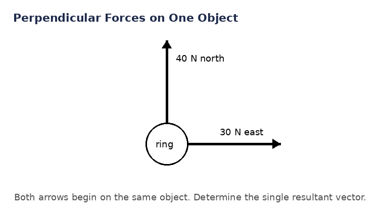

Canonical downstream-complete Unit Bank. Teacher-facing source; secure items and keys are not student practice.
1.1 Thinking Like a Physicist
Learning Target: Students will explain how physics uses observation, measurement, evidence, models, and testable claims to understand the natural world.
What's To Come
U1-S1-WTC01 · What's To Come · MG U1-MG01 · DOK 2 · instructional
A student measures the same rolling cart travel time four times.
Trial
Time (s)
1
2.41
2
2.38
3
2.43
4
2.40
Write one statement that is directly observed or measured and one statement that is an inference. Then name one additional measurement that could test the inference.
Notes Example
U1-S1-NOTE-EX01 · Notes Example · MG U1-MG01 · DOK 2 · instructional
A student writes, “The metal ball rolled 84 cm.” Then the student writes, “The ramp must have been steeper this time.” Classify each statement as an observation or inference and explain the difference.
Teacher key / solution
The 84 cm statement is an observation/measurement. The statement about ramp steepness is an inference because it proposes an explanation not directly measured.
Expected evidence: Correct physics interpretation with representation/model meaning.
Scoring: Full credit for correct conclusion and physics reason.
U1-S1-NOTE-EX02 · Notes Example · MG U1-MG01 · DOK 2 · instructional
Compare the claims “Objects fall because they want to reach the ground” and “Increasing drop height changes measured fall time.” Which claim is testable in a school investigation, and why?
Teacher key / solution
The second claim is testable because height and fall time can be measured and compared. “Wanting” is not an operational, measurable physics variable.
Expected evidence: Correct physics interpretation with representation/model meaning.
Scoring: Full credit for correct conclusion and physics reason.
U1-S1-NOTE-EX03 · Notes Example · MG U1-MG01 · DOK 2 · instructional
The relationship $d=vt$ can describe constant-speed motion. Explain what the equation says physically before using numbers. What change in $d$ would you expect if $v$ doubles while $t$ stays fixed?
Teacher key / solution
Distance traveled depends on both speed and elapsed time. With time fixed, doubling speed doubles the distance. The equation is a model of a relationship, not only a calculator rule.
Expected evidence: Correct physics interpretation with representation/model meaning.
Scoring: Full credit for correct conclusion and physics reason.
U1-S1-NOTE-EX04 · Notes Example · MG U1-MG01 · DOK 2 · instructional
Trial
Length (cm)
1
15.2
2
15.1
3
15.3
A student concludes, “The device always gives exactly 15.2 cm.” Evaluate the conclusion using the evidence.
Teacher key / solution
The data cluster near 15.2 cm, but they do not show an exact repeated value. A stronger conclusion is that repeated measurements are close to 15.2 cm within the observed spread.
Expected evidence: Correct physics interpretation with representation/model meaning.
Scoring: Full credit for correct conclusion and physics reason.
A lab group records that a cart travels 0.50 m in 1.2 s. One student says, “The cart was slowed by friction.” Which part is observation and which part is inference?
Teacher key / solution
The distance and time are observations/measurements. The claim that friction slowed the cart is an inference unless friction or a change in motion was independently measured.
Expected evidence: Correct physics interpretation with representation/model meaning.
Scoring: Full credit for correct conclusion and physics reason.
A student claims, “A heavier cart always rolls faster because it has more motion inside it.” Rewrite the claim so it can be tested with measurements.
Teacher key / solution
Example: “For carts released from the same ramp position, increasing cart mass changes the measured speed at the bottom.” This names measurable variables and a repeatable comparison.
Expected evidence: Correct physics interpretation with representation/model meaning.
Scoring: Full credit for correct conclusion and physics reason.
Measurements of a pendulum period are 1.84 s, 1.87 s, and 1.85 s. What claim is supported, and what claim would go beyond the evidence?
Teacher key / solution
Supported: the measured period is about 1.85 s for these trials. Too strong: the period is exactly 1.850 s in every possible trial.
Expected evidence: Correct physics interpretation with representation/model meaning.
Scoring: Full credit for correct conclusion and physics reason.
Practice Set 1
U1-S1-PS1-Q01 · Practice Set 1 · MG U1-MG01 · DOK 2 · instructional
A timer reads 3.14 s; the student says the cart probably hit a rough patch. Separate the direct evidence from the inference.
U1-S1-PS1-Q02 · Practice Set 1 · MG U1-MG01 · DOK 2 · instructional
A thermometer reads 21.6°C; the student says sunlight warmed the beaker. Separate the direct evidence from the inference. Then identify one kind of measurement that could test the inferred cause.
U1-S1-PS1-Q03 · Practice Set 1 · MG U1-MG01 · DOK 2 · instructional
A classmate writes “Blue carts move better.” Rewrite it as a testable physics claim.
“For the same ramp release point, blue and red carts have different measured travel times.”
A claim is scientific if it sounds reasonable.
A claim is scientific only if it is already known to be true.
A claim cannot be revised after data are collected.
U1-S1-PS1-Q04 · Practice Set 1 · MG U1-MG01 · DOK 2 · instructional
A classmate writes “Heavy objects are naturally eager to fall.” Rewrite it as a testable physics claim. Name the measurable variable you would change or compare and the measurement that would test the claim.
U1-S1-PS1-Q05 · Practice Set 1 · MG U1-MG01 · DOK 2 · instructional
Three measurements are 2.1, 2.11, and 2.09. What conclusion about consistency is supported?
U1-S1-PS1-Q06 · Practice Set 1 · MG U1-MG01 · DOK 2 · instructional
Three measurements are 48, 51, and 49. What conclusion about consistency is supported? Choose the conclusion that best matches the spread in the measurements.
Claim exact certainty from a small set of measurements.
The measurements cluster near 49–50 cm; they support an approximate value, not an exact universal value.
Ignore the spread and report only the first trial.
Treat any variation as proof that no conclusion is possible.
U1-S1-PS1-Q07 · Practice Set 1 · MG U1-MG01 · DOK 2 · instructional
Interpret $d=vt$ as a physical relationship. State one qualitative prediction it makes.
U1-S1-PS1-Q08 · Practice Set 1 · MG U1-MG01 · DOK 2 · instructional
Interpret $W=mg$ as a physical relationship. State one qualitative prediction it makes. Identify the quantity held fixed in the qualitative prediction.
U1-S1-PS1-Q09 · Practice Set 1 · MG U1-MG01 · DOK 2 · instructional
Repeated measurements are 10.2, 10.3, 10.2, 10.4. Give a reasonable central estimate and describe the spread.
U1-S1-PS1-Q10 · Practice Set 1 · MG U1-MG01 · DOK 2 · instructional
Repeated measurements are 4.8, 4.77, 4.82, 4.79. Give a reasonable central estimate and describe the spread. Report the observed range from the smallest to the largest measurement.
U1-S1-PS1-Q11 · Practice Set 1 · MG U1-MG01 · DOK 2 · instructional
Which statement correctly distinguishes the scientific roles of a law and a theory?
Theories become laws after enough proof.
Laws are guesses; theories are measurements.
Laws and theories have different roles: laws describe consistent relationships or patterns; theories are explanatory frameworks. One does not mature into the other.
The words mean exactly the same thing.
U1-S1-PS1-Q12 · Practice Set 1 · MG U1-MG01 · DOK 2 · instructional
Which kind of scientific statement is mainly intended to describe a consistent relationship, and which is intended to explain a broad body of evidence? In your response, distinguish the descriptive role of a scientific law from the explanatory role of a scientific theory.
U1-S1-PS1-Q13 · Practice Set 1 · MG U1-MG01 · DOK 2 · instructional
Build a one-sentence claim-evidence-reasoning response for this result: A cart slows more on carpet than tile.
U1-S1-PS1-Q14 · Practice Set 1 · MG U1-MG01 · DOK 2 · instructional
Which claim-evidence-reasoning response is best supported by this result: A magnet pulls a paper clip from 2 cm but not from 8 cm.
State a claim without connecting the observed result to it.
List evidence but omit the reasoning link.
Use a conclusion that is unrelated to the stated measurements.
Claim: interaction strength in this setup depends on separation; evidence: attraction is observed at 2 cm but not 8 cm; reasoning links the changed distance to the observed interaction.
U1-S1-PS1-Q15 · Practice Set 1 · MG U1-MG01 · DOK 2 · instructional
Without calculating, explain what the symbols in $d=vt$ represent physically.
U1-S1-PS1-Q16 · Practice Set 1 · MG U1-MG01 · DOK 2 · instructional
Without calculating, explain what the symbols in $W=mg$ represent physically. Then state what the quantity on the left side represents physically.
U1-S1-PS1-Q17 · Practice Set 1 · MG U1-MG01 · DOK 2 · instructional
A ruler trial set is 12.1, 12.2, 12.1 cm. Is “exactly 12.133333 cm” justified?
U1-S1-PS1-Q18 · Practice Set 1 · MG U1-MG01 · DOK 2 · instructional
A stopwatch reads to 0.01 s. A student reports an average as 2.384726 s. What is wrong? Explain using the resolution of the original measurement.
Practice Set 2
U1-S1-PS2-Q01 · Practice Set 2 · MG U1-MG01 · DOK 2 · instructional
A classmate writes “Heavy objects are naturally eager to fall.” Rewrite it as a testable physics claim.
U1-S1-PS2-Q02 · Practice Set 2 · MG U1-MG01 · DOK 2 · instructional
Three measurements are 48, 51, and 49. What conclusion about consistency is supported?
U1-S1-PS2-Q03 · Practice Set 2 · MG U1-MG01 · DOK 2 · instructional
Three measurements are 7.8, 7.6, and 7.7. What conclusion about consistency is supported? Use the spread of the measurements to justify how consistent the trials are.
U1-S1-PS2-Q04 · Practice Set 2 · MG U1-MG01 · DOK 2 · instructional
Interpret $W=mg$ as a physical relationship. State one qualitative prediction it makes.
Treat the equation as a calculator rule with no physical interpretation.
$W$ depends on mass and local gravitational field strength. At the same $g$, larger mass gives proportionally larger weight.
Assume changing one variable never affects the related quantities.
Read the symbols as labels with no relationship among them.
U1-S1-PS2-Q05 · Practice Set 2 · MG U1-MG01 · DOK 2 · instructional
Interpret $F_{net}=F_R-F_L$ as a physical relationship. State one qualitative prediction it makes. Identify the quantity held fixed in the qualitative prediction.
U1-S1-PS2-Q06 · Practice Set 2 · MG U1-MG01 · DOK 2 · instructional
Repeated measurements are 4.8, 4.77, 4.82, 4.79. Give a reasonable central estimate and describe the spread.
U1-S1-PS2-Q07 · Practice Set 2 · MG U1-MG01 · DOK 2 · instructional
Repeated measurements are 22.1, 21.9, 22.0, 22.2. Give a reasonable central estimate and describe the spread. Choose the summary that gives both a reasonable center and the observed range.
A reasonable center is about 22.05; the spread is from 21.9 to 22.2.
Report more precision than the measurements support.
Use only the largest trial as the central estimate.
Describe a small spread as if the trials were unrelated.
U1-S1-PS2-Q08 · Practice Set 2 · MG U1-MG01 · DOK 2 · instructional
Which kind of scientific statement is mainly intended to describe a consistent relationship, and which is intended to explain a broad body of evidence?
U1-S1-PS2-Q09 · Practice Set 2 · MG U1-MG01 · DOK 2 · instructional
A classmate calls a well-supported theory “just a guess.” Explain the problem with that wording. In your response, distinguish the descriptive role of a scientific law from the explanatory role of a scientific theory.
U1-S1-PS2-Q10 · Practice Set 2 · MG U1-MG01 · DOK 2 · instructional
Build a one-sentence claim-evidence-reasoning response for this result: A magnet pulls a paper clip from 2 cm but not from 8 cm.
U1-S1-PS2-Q11 · Practice Set 2 · MG U1-MG01 · DOK 2 · instructional
Build a one-sentence claim-evidence-reasoning response for this result: A dropped coffee filter reaches nearly the same speed late in several trials. Identify the claim, the observed evidence, and the reasoning link that connects them.
U1-S1-PS2-Q12 · Practice Set 2 · MG U1-MG01 · DOK 2 · instructional
Without calculating, explain what the symbols in $W=mg$ represent physically.
Treat the symbols as unitless placeholders with no physical quantities.
W is weight, m is mass, g is gravitational field strength.
Swap the meaning of the dependent and given quantities.
Assume the relationship says all variables must be equal.
U1-S1-PS2-Q13 · Practice Set 2 · MG U1-MG01 · DOK 2 · instructional
Without calculating, explain what the symbols in $F_{net}=F_R-F_L$ represent physically. Then state what the quantity on the left side represents physically.
U1-S1-PS2-Q14 · Practice Set 2 · MG U1-MG01 · DOK 2 · instructional
A stopwatch reads to 0.01 s. A student reports an average as 2.384726 s. What is wrong?
U1-S1-PS2-Q15 · Practice Set 2 · MG U1-MG01 · DOK 2 · instructional
A balance reads to 0.1 g. Three readings cluster around 54.2 g. Is 54.200000 g appropriate? Choose the statement whose reported precision is supported by the original measurement resolution.
No. Extra zeros imply precision not supplied by the instrument/data.
Add digits after calculating to make the result scientific.
Always report six decimal places.
Round every measurement to a whole number.
U1-S1-PS2-Q16 · Practice Set 2 · MG U1-MG01 · DOK 2 · instructional
A thermometer reads 21.6°C; the student says sunlight warmed the beaker. Separate the direct evidence from the inference.
U1-S1-PS2-Q17 · Practice Set 2 · MG U1-MG01 · DOK 2 · instructional
A spring stretches 4.2 cm; the student says the spring is softer than yesterday. Separate the direct evidence from the inference. Then identify one kind of measurement that could test the inferred cause.
U1-S1-PS2-Q18 · Practice Set 2 · MG U1-MG01 · DOK 2 · instructional
A classmate writes “This magnet is powerful.” Which revision makes the claim testable with measurable quantities?
A claim is scientific if it sounds reasonable.
A claim is scientific only if it is already known to be true.
A claim cannot be revised after data are collected.
“At a fixed separation, this magnet produces a larger measured pull than the comparison magnet.”
Practice Set 3
U1-S1-PS3-Q01 · Practice Set 3 · MG U1-MG01 · DOK 2 · instructional
Interpret $F_{net}=F_R-F_L$ as a physical relationship. State one qualitative prediction it makes.
Treat the equation as a calculator rule with no physical interpretation.
Assume changing one variable never affects the related quantities.
Read the symbols as labels with no relationship among them.
The sign and magnitude of the difference describe the resultant. Increasing $F_R$ while $F_L$ is fixed makes the net force more rightward.
U1-S1-PS3-Q02 · Practice Set 3 · MG U1-MG01 · DOK 2 · instructional
Repeated measurements are 22.1, 21.9, 22.0, 22.2. Give a reasonable central estimate and describe the spread.
A reasonable center is about 22.05; the spread is from 21.9 to 22.2.
Report more precision than the measurements support.
Use only the largest trial as the central estimate.
Describe a small spread as if the trials were unrelated.
U1-S1-PS3-Q03 · Practice Set 3 · MG U1-MG01 · DOK 2 · instructional
A classmate calls a well-supported theory “just a guess.” Explain the problem with that wording.
Theories become laws after enough proof.
In science, a theory is a well-supported explanatory framework grounded in evidence and testing, not an everyday guess.
Laws are guesses; theories are measurements.
The words mean exactly the same thing.
U1-S1-PS3-Q04 · Practice Set 3 · MG U1-MG01 · DOK 2 · instructional
Build a one-sentence claim-evidence-reasoning response for this result: A dropped coffee filter reaches nearly the same speed late in several trials.
State a claim without connecting the observed result to it.
List evidence but omit the reasoning link.
Claim: the filter approaches a repeatable motion state late in the fall; evidence: late-trial speed values are similar; reasoning connects repeated measurements to the model claim.
Use a conclusion that is unrelated to the stated measurements.
U1-S1-PS3-Q05 · Practice Set 3 · MG U1-MG01 · DOK 2 · instructional
Without calculating, explain what the symbols in $F_{net}=F_R-F_L$ represent physically.
Treat the symbols as unitless placeholders with no physical quantities.
Swap the meaning of the dependent and given quantities.
Assume the relationship says all variables must be equal.
F_net is resultant horizontal force; F_R and F_L are opposing force magnitudes.
U1-S1-PS3-Q06 · Practice Set 3 · MG U1-MG01 · DOK 2 · instructional
A balance reads to 0.1 g. Three readings cluster around 54.2 g. Is 54.200000 g appropriate?
No. Extra zeros imply precision not supplied by the instrument/data.
Add digits after calculating to make the result scientific.
Always report six decimal places.
Round every measurement to a whole number.
U1-S1-PS3-Q07 · Practice Set 3 · MG U1-MG01 · DOK 2 · instructional
A spring stretches 4.2 cm; the student says the spring is softer than yesterday. Separate the direct evidence from the inference.
Treat the proposed cause as if it were directly observed.
4.2 cm is measured; the claim about softness is an inference unless stiffness is tested.
Call every measured number an inference.
Assume a plausible explanation counts as measured evidence.
U1-S1-PS3-Q08 · Practice Set 3 · MG U1-MG01 · DOK 2 · instructional
A classmate writes “This magnet is powerful.” Rewrite it as a testable physics claim.
A claim is scientific if it sounds reasonable.
A claim is scientific only if it is already known to be true.
“At a fixed separation, this magnet produces a larger measured pull than the comparison magnet.”
A claim cannot be revised after data are collected.
U1-S1-PS3-Q09 · Practice Set 3 · MG U1-MG01 · DOK 2 · instructional
Three measurements are 7.8, 7.6, and 7.7. What conclusion about consistency is supported?
Claim exact certainty from a small set of measurements.
Ignore the spread and report only the first trial.
Treat any variation as proof that no conclusion is possible.
The data are close to 7.7 N and support consistency within the observed spread.
U1-S1-PS3-Q10 · Practice Set 3 · MG U1-MG01 · DOK 2 · instructional
Which interpretation gives the physical meaning of $\Sigma F=0$ and a valid qualitative prediction?
The relationship describes balance, not absence of forces. The forces can be nonzero individually while their vector sum is zero.
Treat the equation as a calculator rule with no physical interpretation.
Assume changing one variable never affects the related quantities.
Read the symbols as labels with no relationship among them.
U1-S1-PS3-Q11 · Practice Set 3 · MG U1-MG01 · DOK 2 · instructional
Repeated measurements are 0.64, 0.67, 0.65, 0.66. Give a reasonable central estimate and describe the spread. Choose the summary that gives both a reasonable center and the observed range.
Report more precision than the measurements support.
A reasonable center is about 0.66; the spread is from 0.64 to 0.67.
Use only the largest trial as the central estimate.
Describe a small spread as if the trials were unrelated.
U1-S1-PS3-Q12 · Practice Set 3 · MG U1-MG01 · DOK 2 · instructional
Which statement correctly distinguishes the scientific roles of laws and theories in this situation? Explain why “law” does not automatically mean “more certain” than “theory”?
Theories become laws after enough proof.
Laws are guesses; theories are measurements.
The terms name different scientific roles rather than levels on one certainty ladder.
The words mean exactly the same thing.
U1-S1-PS3-Q13 · Practice Set 3 · MG U1-MG01 · DOK 2 · instructional
Which claim-evidence-reasoning response is best supported by this result: A cart released higher on a ramp reaches the bottom sooner over the same path.
State a claim without connecting the observed result to it.
List evidence but omit the reasoning link.
Use a conclusion that is unrelated to the stated measurements.
Claim: release condition changes the motion; evidence: shorter measured travel time from higher release; reasoning connects the controlled change to the measured outcome.
U1-S1-PS3-Q14 · Practice Set 3 · MG U1-MG01 · DOK 2 · instructional
Which interpretation correctly identifies the physical meaning of the symbols in $\Sigma F=0$?
the vector sum of all external forces on the chosen object is zero.
Treat the symbols as unitless placeholders with no physical quantities.
Swap the meaning of the dependent and given quantities.
Assume the relationship says all variables must be equal.
U1-S1-PS3-Q15 · Practice Set 3 · MG U1-MG01 · DOK 2 · instructional
A meterstick measurement is estimated to the nearest millimeter. Explain why a twelve-decimal-place result from later arithmetic is misleading. Choose the statement whose reported precision is supported by the original measurement resolution.
Add digits after calculating to make the result scientific.
Arithmetic cannot create measurement precision that was never present in the measured inputs.
Always report six decimal places.
Round every measurement to a whole number.
U1-S1-PS3-Q16 · Practice Set 3 · MG U1-MG01 · DOK 2 · instructional
A ball lands 1.8 m away; the student says the launcher angle caused the range. Separate the direct evidence from the inference. Choose the classification that keeps the directly measured result separate from the inferred cause.
Treat the proposed cause as if it were directly observed.
Call every measured number an inference.
1.8 m is observed; the angle-cause statement is an inference.
Assume a plausible explanation counts as measured evidence.
U1-S1-PS3-Q17 · Practice Set 3 · MG U1-MG01 · DOK 2 · instructional
A classmate writes “The floor makes the cart tired.” Which revision makes the claim testable with measurable quantities?
A claim is scientific if it sounds reasonable.
A claim is scientific only if it is already known to be true.
A claim cannot be revised after data are collected.
“The cart’s speed decreases more on carpet than on tile over the same distance.”
U1-S1-PS3-Q18 · Practice Set 3 · MG U1-MG01 · DOK 2 · instructional
Three measurements are 1.2, 1.8, and 1.1. What conclusion about consistency is supported? Choose the conclusion that best matches the spread in the measurements.
The measurements vary substantially, so a claim of highly consistent trials is not supported.
Claim exact certainty from a small set of measurements.
Ignore the spread and report only the first trial.
Treat any variation as proof that no conclusion is possible.
Extra Practice
U1-S1-XP-Q01 · Extra Practice · MG U1-MG01 · DOK 2 · instructional
A ball lands 1.8 m away; the student says the launcher angle caused the range. Separate the direct evidence from the inference.
1.8 m is observed; the angle-cause statement is an inference.
Treat the proposed cause as if it were directly observed.
Call every measured number an inference.
Assume a plausible explanation counts as measured evidence.
U1-S1-XP-Q02 · Extra Practice · MG U1-MG01 · DOK 2 · instructional
A classmate writes “The floor makes the cart tired.” Rewrite it as a testable physics claim.
U1-S1-XP-Q03 · Extra Practice · MG U1-MG01 · DOK 2 · instructional
A classmate writes “Blue carts move better.” Rewrite it as a testable physics claim. Name the measurable variable you would change or compare and the measurement that would test the claim.
U1-S1-XP-Q04 · Extra Practice · MG U1-MG01 · DOK 2 · instructional
Three measurements are 1.2, 1.8, and 1.1. What conclusion about consistency is supported?
U1-S1-XP-Q05 · Extra Practice · MG U1-MG01 · DOK 2 · instructional
Three measurements are 2.1, 2.11, and 2.09. What conclusion about consistency is supported? Use the spread of the measurements to justify how consistent the trials are.
U1-S1-XP-Q06 · Extra Practice · MG U1-MG01 · DOK 2 · instructional
Interpret $\Sigma F=0$ as a physical relationship. State one qualitative prediction it makes.
Treat the equation as a calculator rule with no physical interpretation.
The relationship describes balance, not absence of forces. The forces can be nonzero individually while their vector sum is zero.
Assume changing one variable never affects the related quantities.
Read the symbols as labels with no relationship among them.
U1-S1-XP-Q07 · Extra Practice · MG U1-MG01 · DOK 2 · instructional
Interpret $d=vt$ as a physical relationship. State one qualitative prediction it makes. Identify the quantity held fixed in the qualitative prediction.
U1-S1-XP-Q08 · Extra Practice · MG U1-MG01 · DOK 2 · instructional
Repeated measurements are 0.64, 0.67, 0.65, 0.66. Give a reasonable central estimate and describe the spread.
U1-S1-XP-Q09 · Extra Practice · MG U1-MG01 · DOK 2 · instructional
Repeated measurements are 10.2, 10.3, 10.2, 10.4. Give a reasonable central estimate and describe the spread. Choose the summary that gives both a reasonable center and the observed range.
Report more precision than the measurements support.
Use only the largest trial as the central estimate.
A reasonable center is about 10.28; the spread is from 10.2 to 10.4.
Describe a small spread as if the trials were unrelated.
U1-S1-XP-Q10 · Extra Practice · MG U1-MG01 · DOK 2 · instructional
Explain why “law” does not automatically mean “more certain” than “theory.”
U1-S1-XP-Q11 · Extra Practice · MG U1-MG01 · DOK 2 · instructional
Explain why a scientific theory does not become a law after accumulating enough evidence. Distinguish the roles of laws and theories.
U1-S1-XP-Q12 · Extra Practice · MG U1-MG01 · DOK 2 · instructional
Build a one-sentence claim-evidence-reasoning response for this result: A cart released higher on a ramp reaches the bottom sooner over the same path.
U1-S1-XP-Q13 · Extra Practice · MG U1-MG01 · DOK 2 · instructional
Build a one-sentence claim-evidence-reasoning response for this result: A cart slows more on carpet than tile. Identify the claim, the observed evidence, and the reasoning link that connects them.
U1-S1-XP-Q14 · Extra Practice · MG U1-MG01 · DOK 2 · instructional
Without calculating, explain what the symbols in $\Sigma F=0$ represent physically.
Treat the symbols as unitless placeholders with no physical quantities.
Swap the meaning of the dependent and given quantities.
Assume the relationship says all variables must be equal.
the vector sum of all external forces on the chosen object is zero.
U1-S1-XP-Q15 · Extra Practice · MG U1-MG01 · DOK 2 · instructional
Without calculating, explain what the symbols in $d=vt$ represent physically. Then state what the quantity on the left side represents physically.
U1-S1-XP-Q16 · Extra Practice · MG U1-MG01 · DOK 2 · instructional
A meterstick measurement is estimated to the nearest millimeter. Explain why a twelve-decimal-place result from later arithmetic is misleading.
U1-S1-XP-Q17 · Extra Practice · MG U1-MG01 · DOK 2 · instructional
A ruler trial set is 12.1, 12.2, 12.1 cm. Is “exactly 12.133333 cm” justified? Choose the statement whose reported precision is supported by the original measurement resolution.
No. Reporting many unsupported digits overstates the measurement precision.
Add digits after calculating to make the result scientific.
Always report six decimal places.
Round every measurement to a whole number.
U1-S1-XP-Q18 · Extra Practice · MG U1-MG01 · DOK 2 · instructional
A timer reads 3.14 s; the student says the cart probably hit a rough patch. Separate the direct evidence from the inference. Then identify one kind of measurement that could test the inferred cause.
Name one role of a model in physics besides calculation.
Exit Ticket A
U1-S1-ET-A-Q01 · Exit Ticket A · MG U1-MG01 · DOK 2 · formative-secure
A student records “The cart traveled 75 cm” and then writes “The axle must be bent.” Identify the evidence and the inference, then state one measurement that could test the inference.
Teacher key / solution
The 75 cm travel is measured evidence. A bent axle is an inference. Repeated travel under controlled conditions or direct wheel/axle observations could test it.
Expected evidence: Evidence toward U1-MG01: Use evidence and models to distinguish observations, inferences, and testable physics explanations, and communicate what a representation or relationship means.
Scoring: 2 points: 1 for correct physics conclusion/model; 1 for supporting reasoning/representation as requested.
U1-S1-ET-A-Q02 · Exit Ticket A · MG U1-MG01 · DOK 2 · formative-secure
A group claims a surface causes more resistance because a cart stops in a shorter distance there. What additional controlled comparison would strengthen the claim?
Teacher key / solution
Release the same cart with the same initial condition on both surfaces and compare stopping distance or velocity change across repeated trials.
Expected evidence: Evidence toward U1-MG01: Use evidence and models to distinguish observations, inferences, and testable physics explanations, and communicate what a representation or relationship means.
Scoring: 2 points: 1 for correct physics conclusion/model; 1 for supporting reasoning/representation as requested.
Exit Ticket B
U1-S1-ET-B-Q01 · Exit Ticket B · MG U1-MG01 · DOK 2 · formative-secure
Interpret $d=vt$ without calculating: what physical relationship does it represent, and what happens to $d$ when $t$ doubles at fixed $v$?
Teacher key / solution
It relates distance to speed and elapsed time for constant-speed motion; doubling time doubles distance at fixed speed.
Expected evidence: Evidence toward U1-MG01: Use evidence and models to distinguish observations, inferences, and testable physics explanations, and communicate what a representation or relationship means.
Scoring: 2 points: 1 for correct physics conclusion/model; 1 for supporting reasoning/representation as requested.
U1-S1-ET-B-Q02 · Exit Ticket B · MG U1-MG01 · DOK 2 · formative-secure
A claim says “this cart moves better because it is red.” Explain why the claim is not yet scientifically useful and rewrite it as a testable claim.
Teacher key / solution
“Moves better” and color-cause language are not operationalized. Example: under the same ramp release, compare measured travel time or stopping distance for carts of different colors while controlling other variables.
Expected evidence: Evidence toward U1-MG01: Use evidence and models to distinguish observations, inferences, and testable physics explanations, and communicate what a representation or relationship means.
Scoring: 2 points: 1 for correct physics conclusion/model; 1 for supporting reasoning/representation as requested.
Exit Ticket C
U1-S1-ET-C-Q01 · Exit Ticket C · MG U1-MG01 · DOK 2 · formative-secure
Three force-meter readings are 3.8 N, 3.9 N, and 6.7 N. A student reports “the force is consistently 3.9 N.” Evaluate the claim using the data.
Teacher key / solution
Two readings are near 3.9 N, but 6.7 N is far from them. The set does not support a claim of tight consistency without investigating the outlier or repeating trials.
Expected evidence: Evidence toward U1-MG01: Use evidence and models to distinguish observations, inferences, and testable physics explanations, and communicate what a representation or relationship means.
Scoring: 2 points: 1 for correct physics conclusion/model; 1 for supporting reasoning/representation as requested.
U1-S1-ET-C-Q02 · Exit Ticket C · MG U1-MG01 · DOK 2 · formative-secure
Distinguish the roles of a scientific law and a scientific theory without placing them on a “less proven to more proven” ladder.
Teacher key / solution
A law describes a consistent relationship/pattern; a theory is an evidence-supported explanatory framework. They serve different roles rather than stages of one certainty ladder.
Expected evidence: Evidence toward U1-MG01: Use evidence and models to distinguish observations, inferences, and testable physics explanations, and communicate what a representation or relationship means.
Scoring: 2 points: 1 for correct physics conclusion/model; 1 for supporting reasoning/representation as requested.
1.2 Forces and Newton’s First Law
Learning Target: Students will explain Newton’s First Law and use the idea of inertia to predict whether an object’s motion will stay the same or change.
What's To Come
U1-S2-WTC01 · What's To Come · MG U1-MG02 · DOK 2 · instructional
The box moves in a straight line at constant speed. What must be true about the unknown horizontal force? Explain what the picture suggests about “motion requiring a forward net force.”
Notes Example
U1-S2-NOTE-EX01 · Notes Example · MG U1-MG02 · DOK 2 · instructional
A puck glides on nearly frictionless ice at constant velocity. After the brief push ends, predict its motion using Newton’s First Law.
Teacher key / solution
With negligible net force after the push, the puck continues at constant velocity. A continuing forward force is not required to maintain the motion.
Expected evidence: Correct physics interpretation with representation/model meaning.
Scoring: Full credit for correct conclusion and physics reason.
U1-S2-NOTE-EX02 · Notes Example · MG U1-MG02 · DOK 2 · instructional
Identify the forces acting on the book and determine the net vertical force.
Teacher key / solution
The table exerts an upward support force and Earth exerts downward weight. The arrows are equal, so the net vertical force is zero.
Expected evidence: Correct physics interpretation with representation/model meaning.
Scoring: Full credit for correct conclusion and physics reason.
U1-S2-NOTE-EX03 · Notes Example · MG U1-MG02 · DOK 2 · instructional
A bus suddenly starts moving forward. A standing passenger tends to lag backward relative to the bus. Explain using inertia without calling inertia a force.
Teacher key / solution
The passenger’s body tends to maintain its previous state of rest. The bus moves forward under the passenger, so the passenger appears to lag backward until contact forces change the passenger’s motion.
Expected evidence: Correct physics interpretation with representation/model meaning.
Scoring: Full credit for correct conclusion and physics reason.
U1-S2-NOTE-EX04 · Notes Example · MG U1-MG02 · DOK 2 · instructional
A cart moves right at constant velocity while a 18 N pull acts right. Determine the horizontal resistance force and explain the motion.
Teacher key / solution
Constant velocity means zero horizontal net force, so resistance is 18 N left. Balanced forces are consistent with constant straight-line motion.
Expected evidence: Correct physics interpretation with representation/model meaning.
Scoring: Full credit for correct conclusion and physics reason.
A laptop rests on a desk. Name the two main vertical forces acting on the laptop and explain why they do not disappear just because the laptop is at rest.
Teacher key / solution
Weight acts downward and the desk’s support force acts upward. The forces are present and balanced, producing zero net force.
Expected evidence: Correct physics interpretation with representation/model meaning.
Scoring: Full credit for correct conclusion and physics reason.
A suitcase rolls left at constant velocity while a 12 N pull acts left. What horizontal resistive force is consistent with the motion?
Teacher key / solution
A 12 N resistive force to the right gives zero horizontal net force.
Expected evidence: Correct physics interpretation with representation/model meaning.
Scoring: Full credit for correct conclusion and physics reason.
Practice Set 1
U1-S2-PS1-Q01 · Practice Set 1 · MG U1-MG02 · DOK 2 · instructional
A puck moves north on nearly frictionless ice after the push ends. Predict the motion using Newton’s First Law.
U1-S2-PS1-Q02 · Practice Set 1 · MG U1-MG02 · DOK 2 · instructional
When a bus starts forward, a passenger seems to tip backward. Explain without describing inertia as a force.
U1-S2-PS1-Q03 · Practice Set 1 · MG U1-MG02 · DOK 2 · instructional
A book rests on a table. Are there no forces, or is the net force zero?
U1-S2-PS1-Q04 · Practice Set 1 · MG U1-MG02 · DOK 1 · instructional
For a box on a shelf, identify the main vertical forces acting on the object.
U1-S2-PS1-Q05 · Practice Set 1 · MG U1-MG02 · DOK 2 · instructional
The box is labeled as moving at constant speed. Determine the missing friction force and explain why the diagram does not require a forward net force.
U1-S2-PS1-Q06 · Practice Set 1 · MG U1-MG02 · DOK 2 · instructional
A hockey puck moves at steady speed on frictionless ice. What horizontal net force is required to keep it moving? Explain using Newton’s First Law.
U1-S2-PS1-Q07 · Practice Set 1 · MG U1-MG02 · DOK 2 · instructional
A bus turns left and a passenger seems to lean right relative to the bus. Explain the observation.
U1-S2-PS1-Q08 · Practice Set 1 · MG U1-MG02 · DOK 1 · instructional
Name the external forces acting on a hanging sign.
U1-S2-PS1-Q09 · Practice Set 1 · MG U1-MG02 · DOK 2 · instructional
A crate moves right at constant velocity while a 14 N applied force acts right. Find the horizontal friction force.
U1-S2-PS1-Q10 · Practice Set 1 · MG U1-MG02 · DOK 2 · instructional
Which has more inertia: empty shopping cart or loaded shopping cart? State the physical property that supports your answer.
U1-S2-PS1-Q11 · Practice Set 1 · MG U1-MG02 · DOK 2 · instructional
A spacecraft drifts far from strong external interactions. Predict the motion using Newton’s First Law. State the net-force condition that supports the prediction.
U1-S2-PS1-Q12 · Practice Set 1 · MG U1-MG02 · DOK 2 · instructional
A loose phone slides forward when a car brakes. Explain without describing inertia as a force. Identify the motion the object tends to keep and name the interaction that eventually changes it; do not invent an inertia force.
U1-S2-PS1-Q13 · Practice Set 1 · MG U1-MG02 · DOK 2 · instructional
A lamp hangs motionless from a cord. Distinguish “no forces” from “no net force.” Name the forces that still act and explain how their vector sum can be zero.
U1-S2-PS1-Q14 · Practice Set 1 · MG U1-MG02 · DOK 1 · instructional
For a computer on a desk, identify the main vertical forces acting on the object. Name the contact object that provides the support force.
U1-S2-PS1-Q15 · Practice Set 1 · MG U1-MG02 · DOK 2 · instructional
An object moves at constant velocity while a 34 N force acts left. If that is the only driving horizontal force, what opposing force is consistent with the motion? State the resulting horizontal net force.
U1-S2-PS1-Q16 · Practice Set 1 · MG U1-MG02 · DOK 2 · instructional
A spacecraft’s engine turns off far from significant external forces. Predict its motion and explain using Newton’s First Law.
U1-S2-PS1-Q17 · Practice Set 1 · MG U1-MG02 · DOK 2 · instructional
A car accelerates forward and a backpack on a smooth seat lags behind relative to the car. Explain the observation. Describe the passenger or object motion relative to the vehicle and explain it without inventing an inertia force.
U1-S2-PS1-Q18 · Practice Set 1 · MG U1-MG02 · DOK 1 · instructional
Name the external forces acting on a book on a table. For each listed force, identify the interaction partner that exerts it.
U1-S2-PS1-Q19 · Practice Set 1 · MG U1-MG02 · DOK 2 · instructional
A crate moves right at constant velocity while a 22 N applied force acts right. Find the horizontal friction force. State the resulting horizontal net force.
Practice Set 2
U1-S2-PS2-Q01 · Practice Set 2 · MG U1-MG02 · DOK 1 · instructional
For a computer on a desk, identify the main vertical forces acting on the object.
U1-S2-PS2-Q02 · Practice Set 2 · MG U1-MG02 · DOK 2 · instructional
An object moves at constant velocity while a 34 N force acts left. If that is the only driving horizontal force, what opposing force is consistent with the motion?
U1-S2-PS2-Q03 · Practice Set 2 · MG U1-MG02 · DOK 2 · instructional
A spacecraft’s engine turns off far from significant external forces. What happens to its velocity if the net external force is approximately zero?
U1-S2-PS2-Q04 · Practice Set 2 · MG U1-MG02 · DOK 2 · instructional
A car accelerates forward and a backpack on a smooth seat lags behind relative to the car. Explain the observation.
U1-S2-PS2-Q05 · Practice Set 2 · MG U1-MG02 · DOK 1 · instructional
Name the external forces acting on a book on a table.
U1-S2-PS2-Q06 · Practice Set 2 · MG U1-MG02 · DOK 2 · instructional
A crate moves right at constant velocity while a 22 N applied force acts right. Find the horizontal friction force.
U1-S2-PS2-Q07 · Practice Set 2 · MG U1-MG02 · DOK 2 · instructional
Which has more inertia: tennis ball or bowling ball? State the physical property that supports your answer.
U1-S2-PS2-Q08 · Practice Set 2 · MG U1-MG02 · DOK 2 · instructional
A spacecraft drifts far from strong external interactions. Predict the motion using Newton’s First Law.
U1-S2-PS2-Q09 · Practice Set 2 · MG U1-MG02 · DOK 2 · instructional
A loose phone slides forward when a car brakes. Explain without describing inertia as a force.
U1-S2-PS2-Q10 · Practice Set 2 · MG U1-MG02 · DOK 2 · instructional
A lamp hangs motionless from a cord. Distinguish “no forces” from “no net force.”
U1-S2-PS2-Q11 · Practice Set 2 · MG U1-MG02 · DOK 1 · instructional
For a student standing on the floor, identify the main vertical forces acting on the object. Name the contact object that provides the support force.
U1-S2-PS2-Q12 · Practice Set 2 · MG U1-MG02 · DOK 2 · instructional
An object moves at constant velocity while a 16 N force acts east. If that is the only driving horizontal force, what opposing force is consistent with the motion? State the resulting horizontal net force.
U1-S2-PS2-Q13 · Practice Set 2 · MG U1-MG02 · DOK 2 · instructional
A cart moves straight at constant speed while push and friction are equal. Does its motion prove there is a forward net force? Use Newton’s First Law to explain what steady motion says about net force.
U1-S2-PS2-Q14 · Practice Set 2 · MG U1-MG02 · DOK 2 · instructional
A train brakes and a standing rider moves forward relative to the train. Explain the observation. Describe the passenger or object motion relative to the vehicle and explain it without inventing an inertia force.
U1-S2-PS2-Q15 · Practice Set 2 · MG U1-MG02 · DOK 1 · instructional
Name the external forces acting on a pulled sled on snow. For each listed force, identify the interaction partner that exerts it.
U1-S2-PS2-Q16 · Practice Set 2 · MG U1-MG02 · DOK 2 · instructional
A crate moves right at constant velocity while a 31 N applied force acts right. Find the horizontal friction force. State the resulting horizontal net force.
U1-S2-PS2-Q17 · Practice Set 2 · MG U1-MG02 · DOK 2 · instructional
A cart coasts on a very low-friction track after a brief push. Predict the motion using Newton’s First Law. State the net-force condition that supports the prediction.
U1-S2-PS2-Q18 · Practice Set 2 · MG U1-MG02 · DOK 2 · instructional
A tablecloth is pulled quickly from under dishes. Which explanation applies inertia correctly without treating inertia as a force?
Describe inertia as a hidden force opposite acceleration.
Say only moving objects have inertia.
Claim the smaller-mass object always has more inertia.
The dishes tend to maintain their state of rest while the cloth moves beneath them.
U1-S2-PS2-Q19 · Practice Set 2 · MG U1-MG02 · DOK 2 · instructional
A person stands still on a floor. What does zero net force mean here? Name the forces that still act and explain how their vector sum can be zero.
Practice Set 3
U1-S2-PS3-Q01 · Practice Set 3 · MG U1-MG02 · DOK 2 · instructional
A train brakes and a standing rider moves forward relative to the train. Explain the observation.
Call the relative shift an inertia force rather than continued velocity.
Say weight changes direction during the vehicle motion.
Assume the passenger instantly matches every velocity change without contact force.
The rider tends to maintain forward velocity until forces change it.
U1-S2-PS3-Q02 · Practice Set 3 · MG U1-MG02 · DOK 2 · instructional
A crate moves right at constant velocity while a 31 N applied force acts right. Find the horizontal friction force.
31 N left, because constant velocity requires zero horizontal net force.
36 N left
26 N left
41 N left
U1-S2-PS3-Q03 · Practice Set 3 · MG U1-MG02 · DOK 2 · instructional
A cart coasts on a very low-friction track after a brief push. Predict the motion using Newton’s First Law.
Assume the object stops as soon as the push ends.
It continues with nearly constant velocity while net force remains near zero.
Add a forward motion-force merely because the object is moving.
Predict speeding up even though the net force is zero.
U1-S2-PS3-Q04 · Practice Set 3 · MG U1-MG02 · DOK 2 · instructional
A person stands still on a floor. What does zero net force mean here?
No forces act at all.
Only motion forces act.
It means the nonzero forces on the person vector-sum to zero, not that forces are absent.
Weight disappears when motion is steady.
U1-S2-PS3-Q05 · Practice Set 3 · MG U1-MG02 · DOK 2 · instructional
An object moves at constant velocity while a 16 N force acts east. If that is the only driving horizontal force, what opposing force is consistent with the motion?
21 N west
11 N west
26 N west
16 N west; the horizontal net force is zero.
U1-S2-PS3-Q06 · Practice Set 3 · MG U1-MG02 · DOK 2 · instructional
A car turns right and a cup slides left relative to the dashboard. Which explanation correctly uses inertia to account for the observed motion relative to the vehicle?
The cup tends to continue its previous motion while the car changes direction; the apparent sideways shift is not an “inertia force.”
Call the relative shift an inertia force rather than continued velocity.
Say weight changes direction during the vehicle motion.
Assume the passenger instantly matches every velocity change without contact force.
U1-S2-PS3-Q07 · Practice Set 3 · MG U1-MG02 · DOK 2 · instructional
A crate moves right at constant velocity while a 18 N applied force acts right. Find the horizontal friction force. Which choice gives the friction force that makes the horizontal force sum zero?
23 N left
18 N left, because constant velocity requires zero horizontal net force.
13 N left
28 N left
U1-S2-PS3-Q08 · Practice Set 3 · MG U1-MG02 · DOK 2 · instructional
A tablecloth is pulled quickly from under dishes. Explain without describing inertia as a force.
Describe inertia as a hidden force opposite acceleration.
Say only moving objects have inertia.
The dishes tend to maintain their state of rest while the cloth moves beneath them.
Claim the smaller-mass object always has more inertia.
U1-S2-PS3-Q09 · Practice Set 3 · MG U1-MG02 · DOK 1 · instructional
For a student standing on the floor, identify the main vertical forces acting on the object.
Omit support because the object is not accelerating.
Draw weight upward and support downward.
Replace the contact force with an inertia arrow.
weight downward and floor support upward.
U1-S2-PS3-Q10 · Practice Set 3 · MG U1-MG02 · DOK 2 · instructional
A cart moves straight at constant speed while push and friction are equal. Does its motion prove there is a forward net force?
No. The motion is consistent with zero net force; balanced forces can accompany motion.
Require a forward net force for every moving object.
Treat velocity itself as a force arrow.
Claim balanced forces can only occur at rest.
U1-S2-PS3-Q11 · Practice Set 3 · MG U1-MG02 · DOK 1 · instructional
Name the external forces acting on a pulled sled on snow.
Include the object’s velocity as an external force.
weight, support, pull, and friction/resistance.
Add inertia as a separate interaction arrow.
List a force the chosen object exerts on something else instead of the force on it.
U1-S2-PS3-Q12 · Practice Set 3 · MG U1-MG02 · DOK 2 · instructional
Which has more inertia: small suitcase or large packed suitcase? State the physical property that supports your answer.
The less massive object.
They always have equal inertia.
large packed suitcase has more inertia because it has greater mass.
Whichever one is moving faster.
U1-S2-PS3-Q13 · Practice Set 3 · MG U1-MG02 · DOK 2 · instructional
A heavy cart and light cart are both at rest. Which has more inertia? Which explanation uses mass/inertia correctly without treating inertia as a force?
Describe inertia as a hidden force opposite acceleration.
Say only moving objects have inertia.
Claim the smaller-mass object always has more inertia.
The heavy cart; greater mass corresponds to greater inertia.
U1-S2-PS3-Q14 · Practice Set 3 · MG U1-MG02 · DOK 1 · instructional
For a plant pot resting on a stand. Which response correctly identifies the main vertical forces acting on the object?
weight downward and stand support upward.
Omit support because the object is not accelerating.
Draw weight upward and support downward.
Replace the contact force with an inertia arrow.
U1-S2-PS3-Q15 · Practice Set 3 · MG U1-MG02 · DOK 2 · instructional
A sled is already moving and the horizontal forces become balanced. Predict what happens rather than assuming it stops. Choose the statement consistent with Newton’s First Law and zero net force.
Require a forward net force for every moving object.
It continues at constant velocity while the net force remains zero.
Treat velocity itself as a force arrow.
Claim balanced forces can only occur at rest.
U1-S2-PS3-Q16 · Practice Set 3 · MG U1-MG02 · DOK 1 · instructional
Name the external forces acting on a falling ball after release, ignoring air drag. Choose the force list containing only interactions that act on the named object.
Include the object’s velocity as an external force.
Add inertia as a separate interaction arrow.
weight only.
List a force the chosen object exerts on something else instead of the force on it.
U1-S2-PS3-Q17 · Practice Set 3 · MG U1-MG02 · DOK 2 · instructional
A hover disk is already moving west when the blower is switched off and horizontal resistance is tiny. Predict the motion using Newton’s First Law. Choose the prediction that is consistent with Newton’s First Law and the stated net-force condition.
Assume the object stops as soon as the push ends.
Add a forward motion-force merely because the object is moving.
Predict speeding up even though the net force is zero.
It keeps moving west at nearly constant velocity; motion itself does not require a continuing westward force.
U1-S2-PS3-Q18 · Practice Set 3 · MG U1-MG02 · DOK 2 · instructional
A cart moves straight at constant velocity while pull and resistance balance. What is zero: each force or the net force? Choose the statement that correctly distinguishes “no forces” from “zero net force.”
The net force is zero; individual horizontal forces may be nonzero and equal/opposite.
No forces act at all.
Only motion forces act.
Weight disappears when motion is steady.
U1-S2-PS3-Q19 · Practice Set 3 · MG U1-MG02 · DOK 2 · instructional
An object moves at constant velocity while a 28 N force acts west. If that is the only driving horizontal force, what opposing force is consistent with the motion? Which opposing force makes the horizontal net force zero?
33 N east
28 N east; the horizontal net force is zero.
23 N east
38 N east
Extra Practice
U1-S2-XP-Q01 · Extra Practice · MG U1-MG02 · DOK 2 · instructional
A heavy cart and light cart are both at rest. Which has more inertia? Explain without describing inertia as a force.
U1-S2-XP-Q02 · Extra Practice · MG U1-MG02 · DOK 2 · instructional
A cart moves straight at constant velocity while pull and resistance balance. What is zero: each force or the net force?
U1-S2-XP-Q03 · Extra Practice · MG U1-MG02 · DOK 1 · instructional
For a plant pot resting on a stand, identify the main vertical forces acting on the object.
U1-S2-XP-Q04 · Extra Practice · MG U1-MG02 · DOK 2 · instructional
An object moves at constant velocity while a 28 N force acts west. If that is the only driving horizontal force, what opposing force is consistent with the motion?
U1-S2-XP-Q05 · Extra Practice · MG U1-MG02 · DOK 2 · instructional
A sled is already moving and the horizontal forces become balanced. Predict what happens rather than assuming it stops.
U1-S2-XP-Q06 · Extra Practice · MG U1-MG02 · DOK 2 · instructional
A car turns right and a cup slides left relative to the dashboard. Explain the observation.
U1-S2-XP-Q07 · Extra Practice · MG U1-MG02 · DOK 1 · instructional
Name the external forces acting on a falling ball after release, ignoring air drag.
U1-S2-XP-Q08 · Extra Practice · MG U1-MG02 · DOK 2 · instructional
A crate moves right at constant velocity while a 18 N applied force acts right. Find the horizontal friction force.
U1-S2-XP-Q09 · Extra Practice · MG U1-MG02 · DOK 2 · instructional
Which has more inertia: 1 kg cart or 4 kg cart? State the physical property that supports your answer.
U1-S2-XP-Q10 · Extra Practice · MG U1-MG02 · DOK 2 · instructional
A hover disk is already moving west when the blower is switched off and horizontal resistance is tiny. Predict the motion using Newton’s First Law.
U1-S2-XP-Q11 · Extra Practice · MG U1-MG02 · DOK 2 · instructional
When a bus starts forward, a passenger seems to tip backward. Explain without describing inertia as a force. Identify the motion the object tends to keep and name the interaction that eventually changes it; do not invent an inertia force.
U1-S2-XP-Q12 · Extra Practice · MG U1-MG02 · DOK 2 · instructional
A book rests on a table. Are there no forces, or is the net force zero? Name the forces that still act and explain how their vector sum can be zero.
U1-S2-XP-Q13 · Extra Practice · MG U1-MG02 · DOK 1 · instructional
For a box on a shelf, identify the main vertical forces acting on the object. Name the contact object that provides the support force.
U1-S2-XP-Q14 · Extra Practice · MG U1-MG02 · DOK 2 · instructional
An object moves at constant velocity while a 21 N force acts right. If that is the only driving horizontal force, what opposing force is consistent with the motion?
U1-S2-XP-Q15 · Extra Practice · MG U1-MG02 · DOK 2 · instructional
A hockey puck moves at steady speed on frictionless ice. Explain why a continuing forward net force is not required.
U1-S2-XP-Q16 · Extra Practice · MG U1-MG02 · DOK 2 · instructional
A bus turns left and a passenger seems to lean right relative to the bus. Explain the observation. Describe the passenger or object motion relative to the vehicle and explain it without inventing an inertia force.
U1-S2-XP-Q17 · Extra Practice · MG U1-MG02 · DOK 1 · instructional
Name the external forces acting on a hanging sign. For each listed force, identify the interaction partner that exerts it.
U1-S2-XP-Q18 · Extra Practice · MG U1-MG02 · DOK 2 · instructional
A crate moves right at constant velocity while a 14 N applied force acts right. Find the horizontal friction force. State the resulting horizontal net force.
U1-S2-XP-Q19 · Extra Practice · MG U1-MG02 · DOK 2 · instructional
A puck moves north on nearly frictionless ice after the push ends. Predict the motion using Newton’s First Law. State the net-force condition that supports the prediction.
A 15 N push right is balanced. What horizontal force acts left?
Exit Ticket A
U1-S2-ET-A-Q01 · Exit Ticket A · MG U1-MG02 · DOK 2 · formative-secure
A low-friction cart moves east at constant velocity after a brief push ends. Predict its motion and explain why no continuing eastward net force is needed.
Teacher key / solution
It continues east at constant velocity while net force remains approximately zero. Newton’s First Law says unchanged velocity does not require a continuing net force.
Expected evidence: Evidence toward U1-MG02: Explain Newton’s First Law and inertia to predict when an object’s motion remains unchanged or changes.
Scoring: 2 points: 1 for correct physics conclusion/model; 1 for supporting reasoning/representation as requested.
U1-S2-ET-A-Q02 · Exit Ticket A · MG U1-MG02 · DOK 3 · formative-secure
A student says “inertia pushes the cart forward after your hand lets go.” Correct the statement.
Teacher key / solution
Inertia is not a force. It is the property associated with resisting changes in velocity; the cart continues its motion when the net external force is zero.
Expected evidence: Evidence toward U1-MG02: Explain Newton’s First Law and inertia to predict when an object’s motion remains unchanged or changes.
Scoring: 2 points: 1 for correct physics conclusion/model; 1 for supporting reasoning/representation as requested.
Exit Ticket B
U1-S2-ET-B-Q01 · Exit Ticket B · MG U1-MG02 · DOK 2 · formative-secure
A 24 N horizontal pull moves a box at constant velocity. Resistance is the only other horizontal force. Determine the resistance and explain the zero-net-force condition.
Teacher key / solution
Resistance is 24 N opposite the pull. The equal opposite horizontal forces sum to zero, so velocity remains constant.
Expected evidence: Evidence toward U1-MG02: Explain Newton’s First Law and inertia to predict when an object’s motion remains unchanged or changes.
Scoring: 2 points: 1 for correct physics conclusion/model; 1 for supporting reasoning/representation as requested.
U1-S2-ET-B-Q02 · Exit Ticket B · MG U1-MG02 · DOK 2 · formative-secure
A lamp hangs at rest. Explain why “no net force” is correct but “no forces” is incorrect.
Teacher key / solution
Weight acts downward and tension acts upward; the nonzero forces balance, producing zero net force.
Expected evidence: Evidence toward U1-MG02: Explain Newton’s First Law and inertia to predict when an object’s motion remains unchanged or changes.
Scoring: 2 points: 1 for correct physics conclusion/model; 1 for supporting reasoning/representation as requested.
Exit Ticket C
U1-S2-ET-C-Q01 · Exit Ticket C · MG U1-MG02 · DOK 2 · formative-secure
A car turns right. A loose object tends to continue straight before the door pushes it into the turn. Explain this without using “inertia force.”
Teacher key / solution
The object tends to maintain its previous velocity; a real contact force from the car is required to change its direction. Inertia describes the property, not an extra force.
Expected evidence: Evidence toward U1-MG02: Explain Newton’s First Law and inertia to predict when an object’s motion remains unchanged or changes.
Scoring: 2 points: 1 for correct physics conclusion/model; 1 for supporting reasoning/representation as requested.
U1-S2-ET-C-Q02 · Exit Ticket C · MG U1-MG02 · DOK 3 · formative-secure
A student argues “a moving object always has a force in the direction it moves.” Give a zero-net-force counterexample and explain it.
Teacher key / solution
Example: a puck gliding at constant velocity on nearly frictionless ice. Its velocity can be nonzero while net force is approximately zero.
Expected evidence: Evidence toward U1-MG02: Explain Newton’s First Law and inertia to predict when an object’s motion remains unchanged or changes.
Scoring: 2 points: 1 for correct physics conclusion/model; 1 for supporting reasoning/representation as requested.
1.3 Net Force and Vectors
Learning Target: Students will represent forces as vectors and determine the direction and relative size of the net force in one-dimensional and simple two-dimensional situations.
What's To Come
U1-S3-WTC01 · What's To Come · MG U1-MG03 · DOK 2 · instructional
Without using a memorized rule, decide what one arrow could replace the two arrows and still represent the same overall push. Describe its direction and relative length.
Notes Example
U1-S3-NOTE-EX01 · Notes Example · MG U1-MG03 · DOK 2 · instructional
Two cases act horizontally on identical carts.
(a) 42 N right and 17 N left. (b) 12 N right and 18 N right. Find the net force in each case. Explain why one case uses subtraction and the other uses addition.
Teacher key / solution
(a) 25 N right. (b) 30 N right. Opposite-direction forces partially cancel, so their magnitudes subtract; same-direction forces reinforce, so their magnitudes add.
Expected evidence: Correct physics interpretation with representation/model meaning.
Scoring: Full credit for correct conclusion and physics reason.
U1-S3-NOTE-EX02 · Notes Example · MG U1-MG03 · DOK 2 · instructional

The two forces are perpendicular. Describe the direction of the single resultant vector. Is its magnitude less than 40 N, between 40 N and 70 N, or greater than 70 N? Then use the right-triangle relationship to determine its magnitude.
Teacher key / solution
The resultant points northeast. Its magnitude must be between 40 N and 70 N. For perpendicular 30 N and 40 N components, the resultant magnitude is 50 N.
Expected evidence: Correct physics interpretation with representation/model meaning.
Scoring: Full credit for correct conclusion and physics reason.
U1-S3-NOTE-EX03 · Notes Example · MG U1-MG03 · DOK 2 · instructional
Use the arrow directions and magnitudes to determine the resultant.
Teacher key / solution
The forces oppose, so subtract: $40-15=25$ N right.
Expected evidence: Correct physics interpretation with representation/model meaning.
Scoring: Full credit for correct conclusion and physics reason.
U1-S3-NOTE-EX04 · Notes Example · MG U1-MG03 · DOK 2 · instructional
A student draws a 50 N force with a shorter arrow than a 20 N force on the same scale. Identify the modeling error and revise the diagram rule.
Teacher key / solution
On a common scale, the 50 N arrow must be longer than the 20 N arrow. Arrow direction represents direction and arrow length represents magnitude.
Expected evidence: Correct physics interpretation with representation/model meaning.
Scoring: Full credit for correct conclusion and physics reason.
A ring has a 12 N force east and a 5 N force south. The forces are perpendicular. Describe the resultant direction and use a right triangle to determine its magnitude.
Teacher key / solution
The resultant points southeast. Its magnitude is 13 N because $\sqrt{12^2+5^2}=13$.
Expected evidence: Correct physics interpretation with representation/model meaning.
Scoring: Full credit for correct conclusion and physics reason.
A diagram uses identical arrow lengths for 10 N and 30 N forces. What should be changed if the drawing is meant to be scaled?
Teacher key / solution
The 30 N arrow should be three times the length of the 10 N arrow on the same scale.
Expected evidence: Correct physics interpretation with representation/model meaning.
Scoring: Full credit for correct conclusion and physics reason.
Practice Set 1
U1-S3-PS1-Q01 · Practice Set 1 · MG U1-MG03 · DOK 2 · instructional
A cart has 42 N right and 18 N left acting horizontally. Determine $F_{net}$.
U1-S3-PS1-Q02 · Practice Set 1 · MG U1-MG03 · DOK 2 · instructional
Two forces of 14 N and 23 N both act east. Find the resultant.
U1-S3-PS1-Q03 · Practice Set 1 · MG U1-MG03 · DOK 2 · instructional
Why is “25 N” alone incomplete as a full force vector description?
U1-S3-PS1-Q04 · Practice Set 1 · MG U1-MG03 · DOK 2 · instructional
On a diagram, 1 cm represents 10 N. How long should a 40 N arrow be?
U1-S3-PS1-Q05 · Practice Set 1 · MG U1-MG03 · DOK 2 · instructional
Determine the resultant represented by the two horizontal arrows.
U1-S3-PS1-Q06 · Practice Set 1 · MG U1-MG03 · DOK 2 · instructional
Rank these one-dimensional cases from greatest to least net-force magnitude: A: 50 R/10 L; B: 30 R/30 L; C: 20 R/5 L.
U1-S3-PS1-Q07 · Practice Set 1 · MG U1-MG03 · DOK 2 · instructional
A crate has 32 N right and an unknown leftward force. The net force is 7 N right. Find the unknown force.
U1-S3-PS1-Q08 · Practice Set 1 · MG U1-MG03 · DOK 2 · instructional
A student calculates 35 N right + 20 N left = 55 N right. Identify the error and correct the result.
U1-S3-PS1-Q09 · Practice Set 1 · MG U1-MG03 · DOK 2 · instructional
An object has 20 N up, 20 N down, 9 N right, and 4 N left. Determine the net force.
U1-S3-PS1-Q10 · Practice Set 1 · MG U1-MG03 · DOK 2 · instructional
Two students push a stalled cart east with 40 N and 25 N while friction is 15 N west. Find the horizontal net force.
U1-S3-PS1-Q11 · Practice Set 1 · MG U1-MG03 · DOK 2 · instructional
Arrow A points right and is twice as long as Arrow B, which points left. If both use the same scale, compare the represented magnitudes and directions.
U1-S3-PS1-Q12 · Practice Set 1 · MG U1-MG03 · DOK 2 · instructional
A cart has 31 N left and 12 N right acting horizontally. Determine $F_{net}$. Choose the resultant with the correct magnitude and direction.
19 N left.
24 N left
14 N left
43 N left
U1-S3-PS1-Q13 · Practice Set 1 · MG U1-MG03 · DOK 2 · instructional
Two forces of 18 N and 27 N both act west. Find the resultant. Explain why forces in the same direction reinforce before giving the resultant.
U1-S3-PS1-Q14 · Practice Set 1 · MG U1-MG03 · DOK 2 · instructional
What two physical features should a force arrow communicate on a scaled diagram? Choose the description that includes both magnitude and direction.
Magnitude only
Its direction and its magnitude through arrow orientation and relative length.
Direction only
Color and label
U1-S3-PS1-Q15 · Practice Set 1 · MG U1-MG03 · DOK 2 · instructional
On a scaled force diagram, a 15 N arrow is 3 cm long. How long should a 30 N arrow be? State the proportional relationship between force magnitude and arrow length.
U1-S3-PS1-Q16 · Practice Set 1 · MG U1-MG03 · DOK 2 · instructional
A 17 N force acts right and a 38 N force acts left. Which direction does the resultant point?
Choose the direction of the smaller opposing force.
Ignore direction and report only a positive magnitude.
Left.
Call equal opposite forces a nonzero directional resultant.
U1-S3-PS1-Q17 · Practice Set 1 · MG U1-MG03 · DOK 2 · instructional
Which has the larger net-force magnitude: A: 45 L and 15 R; B: 35 R and 20 L? Compare the net-force magnitude in each case before ranking them.
U1-S3-PS1-Q18 · Practice Set 1 · MG U1-MG03 · DOK 2 · instructional
A cart has 18 N left and an unknown rightward force. The net force is 11 N right. Find the unknown force. Choose the missing force that reproduces the stated net force.
34 N right
24 N right
47 N right
29 N right.
U1-S3-PS1-Q19 · Practice Set 1 · MG U1-MG03 · DOK 2 · instructional
A classmate says 18 N east and 18 N west make 36 N east because “forces always add.” Correct the reasoning. Use the force directions explicitly in the correction.
U1-S3-PS1-Q20 · Practice Set 1 · MG U1-MG03 · DOK 2 · instructional
A sign has 50 N up, 50 N down, 7 N left, and 12 N right. Find the resultant. Choose the resultant obtained by treating horizontal and vertical components separately.
5 N right.
Combine perpendicular directions as if they were a single one-dimensional line.
Ignore a balanced axis and reverse the unbalanced axis.
Declare zero net force because one axis balances.
U1-S3-PS1-Q21 · Practice Set 1 · MG U1-MG03 · DOK 2 · instructional
A tug pulls a sled west with 55 N while snow resistance is 20 N east. Determine the resultant. Translate each push or pull into a direction, then combine all stated interactions to obtain the net force.
Practice Set 2
U1-S3-PS2-Q01 · Practice Set 2 · MG U1-MG03 · DOK 2 · instructional
On a scaled force diagram, a 15 N arrow is 3 cm long. How long should a 30 N arrow be?
U1-S3-PS2-Q02 · Practice Set 2 · MG U1-MG03 · DOK 2 · instructional
A 17 N right force and 38 N left force act. State only the direction of the resultant.
U1-S3-PS2-Q03 · Practice Set 2 · MG U1-MG03 · DOK 2 · instructional
Which has the larger net-force magnitude: A: 45 L and 15 R; B: 35 R and 20 L?
U1-S3-PS2-Q04 · Practice Set 2 · MG U1-MG03 · DOK 2 · instructional
A cart has 18 N left and an unknown rightward force. The net force is 11 N right. Find the unknown force.
U1-S3-PS2-Q05 · Practice Set 2 · MG U1-MG03 · DOK 2 · instructional
A classmate says 18 N east and 18 N west make 36 N east because “forces always add.” Correct the reasoning.
U1-S3-PS2-Q06 · Practice Set 2 · MG U1-MG03 · DOK 2 · instructional
A sign has 50 N up, 50 N down, 7 N left, and 12 N right. Find the resultant.
U1-S3-PS2-Q07 · Practice Set 2 · MG U1-MG03 · DOK 2 · instructional
A tug pulls a sled west with 55 N while snow resistance is 20 N east. Determine the resultant.
U1-S3-PS2-Q08 · Practice Set 2 · MG U1-MG03 · DOK 2 · instructional
Two arrows have equal length but one points north and one east. What is the same and what differs?
U1-S3-PS2-Q09 · Practice Set 2 · MG U1-MG03 · DOK 2 · instructional
A cart has 31 N left and 12 N right acting horizontally. Determine $F_{net}$.
U1-S3-PS2-Q10 · Practice Set 2 · MG U1-MG03 · DOK 2 · instructional
Two forces of 18 N and 27 N both act west. Find the resultant.
50 N west
40 N west
43 N west
45 N west.
U1-S3-PS2-Q11 · Practice Set 2 · MG U1-MG03 · DOK 2 · instructional
What two physical features should a force arrow communicate on a scaled diagram?
U1-S3-PS2-Q12 · Practice Set 2 · MG U1-MG03 · DOK 2 · instructional
A 20 N force is drawn 2 cm long. A second force is drawn 5 cm long on the same scale. What magnitude does the second arrow represent? Which choice preserves the common force-arrow scale?
Ignore the scale and make all arrows the same length.
50 N.
Use inverse proportionality between force and arrow length.
Change arrow direction when only magnitude changes.
U1-S3-PS2-Q13 · Practice Set 2 · MG U1-MG03 · DOK 2 · instructional
Two forces act north: 12 N and 9 N. What is the resultant direction? Identify which opposing force determines the resultant direction.
U1-S3-PS2-Q14 · Practice Set 2 · MG U1-MG03 · DOK 2 · instructional
Compare net-force magnitude for A: 18 N east + 18 N east and B: 50 N east + 20 N west. Choose the ranking based on net-force magnitude, not total force magnitude.
Rank cases by the longest single arrow rather than vector sum.
Add all magnitudes regardless of direction.
Treat every pair of forces as balanced.
A is 36 N; B is 30 N, so A is larger.
U1-S3-PS2-Q15 · Practice Set 2 · MG U1-MG03 · DOK 2 · instructional
Two horizontal forces produce zero net force. One is 44 N east. What is the other? Write the one-dimensional force balance that links the known force, unknown force, and stated net force.
U1-S3-PS2-Q16 · Practice Set 2 · MG U1-MG03 · DOK 2 · instructional
A student gets 12 N left from 27 N right and 39 N left but labels the direction right. What should be revised? Choose the correction that treats force direction as part of the vector addition.
Keep the arithmetic error because forces always add as positive numbers.
The magnitude 12 N is correct, but the resultant points left because the larger force is leftward.
Correct the magnitude but keep the resultant direction reversed.
Ignore whether arrows point together or opposite.
U1-S3-PS2-Q17 · Practice Set 2 · MG U1-MG03 · DOK 2 · instructional
A crate has 30 N up/down balanced and 16 N east with 16 N west. What is the net force? Treat horizontal and vertical components separately.
U1-S3-PS2-Q18 · Practice Set 2 · MG U1-MG03 · DOK 2 · instructional
A dog pulls a toy north with 18 N while another dog pulls south with 26 N. Find the net force. Choose the net force that accounts for every stated interaction and direction.
Ignore the resistive force in the scenario.
Use the direction of motion instead of the vector sum.
Add an unmentioned motion-force to the model.
8 N south.
U1-S3-PS2-Q19 · Practice Set 2 · MG U1-MG03 · DOK 2 · instructional
A cart has 55 N right and 27 N left acting horizontally. Determine $F_{net}$. Choose the resultant with the correct magnitude and direction.
28 N right.
33 N right
23 N right
82 N right
U1-S3-PS2-Q20 · Practice Set 2 · MG U1-MG03 · DOK 2 · instructional
Use the diagram to determine the horizontal resultant.
U1-S3-PS2-Q21 · Practice Set 2 · MG U1-MG03 · DOK 2 · instructional
Why is direction not optional when describing a force vector? Choose the statement that includes the required vector information.
Magnitude only
Direction only
Force is a vector, so direction is part of the quantity; changing direction can change the net force.
Color and label
Practice Set 3
U1-S3-PS3-Q01 · Practice Set 3 · MG U1-MG03 · DOK 2 · instructional
Two horizontal forces produce zero net force. One is 44 N east. What is the other?
49 N west
39 N west
54 N west
44 N west.
U1-S3-PS3-Q02 · Practice Set 3 · MG U1-MG03 · DOK 2 · instructional
A crate has 30 N up/down balanced and 16 N east with 16 N west. What is the net force?
0 N.
Combine perpendicular directions as if they were a single one-dimensional line.
Ignore a balanced axis and reverse the unbalanced axis.
Declare zero net force because one axis balances.
U1-S3-PS3-Q03 · Practice Set 3 · MG U1-MG03 · DOK 2 · instructional
A short arrow points west and a long arrow points west. What can you infer on a common scale?
Say equal arrow length means equal direction.
Both forces point west; the long arrow represents the larger magnitude.
Say opposite directions automatically mean different magnitudes.
Treat arrow length as unrelated to force magnitude on a shared scale.
U1-S3-PS3-Q04 · Practice Set 3 · MG U1-MG03 · DOK 2 · instructional
Two forces of 12 N and 35 N both act right. Find the resultant.
52 N right
42 N right
47 N right.
45 N right
U1-S3-PS3-Q05 · Practice Set 3 · MG U1-MG03 · DOK 2 · instructional
A 20 N force is drawn 2 cm long. A second force is drawn 5 cm long on the same scale. What magnitude does the second arrow represent?
Ignore the scale and make all arrows the same length.
Use inverse proportionality between force and arrow length.
Change arrow direction when only magnitude changes.
50 N.
U1-S3-PS3-Q06 · Practice Set 3 · MG U1-MG03 · DOK 2 · instructional
Compare net-force magnitude for A: 18 N east + 18 N east and B: 50 N east + 20 N west.
A is 36 N; B is 30 N, so A is larger.
Rank cases by the longest single arrow rather than vector sum.
Add all magnitudes regardless of direction.
Treat every pair of forces as balanced.
U1-S3-PS3-Q07 · Practice Set 3 · MG U1-MG03 · DOK 2 · instructional
A student gets 12 N left from 27 N right and 39 N left but labels the direction right. What should be revised?
Keep the arithmetic error because forces always add as positive numbers.
The magnitude 12 N is correct, but the resultant points left because the larger force is leftward.
Correct the magnitude but keep the resultant direction reversed.
Ignore whether arrows point together or opposite.
U1-S3-PS3-Q08 · Practice Set 3 · MG U1-MG03 · DOK 2 · instructional
A dog pulls a toy north with 18 N while another dog pulls south with 26 N. Find the net force.
Ignore the resistive force in the scenario.
Use the direction of motion instead of the vector sum.
8 N south.
Add an unmentioned motion-force to the model.
U1-S3-PS3-Q09 · Practice Set 3 · MG U1-MG03 · DOK 2 · instructional
Two forces of 25 N and 19 N both act left. Find the resultant. Choose the resultant that adds the same-direction force magnitudes.
49 N left
39 N left
42 N left
44 N left.
U1-S3-PS3-Q10 · Practice Set 3 · MG U1-MG03 · DOK 2 · instructional
Two arrows on one scale are 2 cm and 6 cm. If the shorter arrow is 12 N, what is the longer force? Which choice preserves the common force-arrow scale?
36 N.
Ignore the scale and make all arrows the same length.
Use inverse proportionality between force and arrow length.
Change arrow direction when only magnitude changes.
U1-S3-PS3-Q11 · Practice Set 3 · MG U1-MG03 · DOK 2 · instructional
Rank A: 70 R/50 L, B: 22 L/3 R, C: 9 R/9 L by net-force magnitude. Choose the ranking based on net-force magnitude, not total force magnitude.
Rank cases by the longest single arrow rather than vector sum.
A = 20 N, B = 19 N, C = 0 N; A > B > C.
Add all magnitudes regardless of direction.
Treat every pair of forces as balanced.
U1-S3-PS3-Q12 · Practice Set 3 · MG U1-MG03 · DOK 2 · instructional
A diagram has 10 N right and 25 N right, but a student subtracts to get 15 N. Which response correctly explains the mistake and gives the resultant?
Keep the arithmetic error because forces always add as positive numbers.
Correct the magnitude but keep the resultant direction reversed.
Forces in the same direction reinforce; the resultant is 35 N right.
Ignore whether arrows point together or opposite.
U1-S3-PS3-Q13 · Practice Set 3 · MG U1-MG03 · DOK 2 · instructional
A rope team pulls right with 35 N + 30 N while another team pulls left with 50 N. Find the resultant. Choose the net force that accounts for every stated interaction and direction.
Ignore the resistive force in the scenario.
Use the direction of motion instead of the vector sum.
Add an unmentioned motion-force to the model.
15 N right.
U1-S3-PS3-Q14 · Practice Set 3 · MG U1-MG03 · DOK 2 · instructional
A cart has 55 N right and 27 N left acting horizontally. Determine $F_{net}$.
28 N right.
33 N right
23 N right
82 N right
U1-S3-PS3-Q15 · Practice Set 3 · MG U1-MG03 · DOK 2 · instructional
Which statement best explains why a force description must include direction as well as magnitude?
Magnitude only
Force is a vector, so direction is part of the quantity; changing direction can change the net force.
Direction only
Color and label
U1-S3-PS3-Q16 · Practice Set 3 · MG U1-MG03 · DOK 2 · instructional
Two forces act north: 12 N and 9 N. What is the resultant direction?
Choose the direction of the smaller opposing force.
Ignore direction and report only a positive magnitude.
North.
Call equal opposite forces a nonzero directional resultant.
U1-S3-PS3-Q17 · Practice Set 3 · MG U1-MG03 · DOK 2 · instructional
A sled has a 37 N west force and a net force of 9 N west. What eastward force also acts? Choose the missing force that reproduces the stated net force.
33 N east
23 N east
65 N east
28 N east.
U1-S3-PS3-Q18 · Practice Set 3 · MG U1-MG03 · DOK 2 · instructional
A toy has 8 N north, 3 N south, 10 N east, and 10 N west. Describe the net force. Choose the resultant obtained by treating horizontal and vertical components separately.
5 N north; east-west forces cancel.
Combine perpendicular directions as if they were a single one-dimensional line.
Ignore a balanced axis and reverse the unbalanced axis.
Declare zero net force because one axis balances.
U1-S3-PS3-Q19 · Practice Set 3 · MG U1-MG03 · DOK 2 · instructional
A cart has 38 N left and 16 N right acting horizontally. Determine $F_{net}$. Choose the resultant with the correct magnitude and direction.
27 N left
22 N left.
17 N left
54 N left
U1-S3-PS3-Q20 · Practice Set 3 · MG U1-MG03 · DOK 2 · instructional
Which statement correctly distinguishes a force vector from a scalar measurement such as temperature?
Magnitude only
Direction only
A force vector includes magnitude and direction, while a scalar such as temperature has magnitude/value without spatial direction.
Color and label
U1-S3-PS3-Q21 · Practice Set 3 · MG U1-MG03 · DOK 2 · instructional
Forces of 24 N south and 24 N north act on an object. Does the resultant have a direction? Choose the direction determined by the larger opposing force, or zero direction if they balance.
Choose the direction of the smaller opposing force.
Ignore direction and report only a positive magnitude.
Call equal opposite forces a nonzero directional resultant.
No; the resultant is zero.
Extra Practice
U1-S3-XP-Q01 · Extra Practice · MG U1-MG03 · DOK 2 · instructional
Two forces of 25 N and 19 N both act left. Find the resultant.
U1-S3-XP-Q02 · Extra Practice · MG U1-MG03 · DOK 2 · instructional
Explain one difference between a force vector and a scalar measurement such as temperature.
U1-S3-XP-Q03 · Extra Practice · MG U1-MG03 · DOK 2 · instructional
Two arrows on one scale are 2 cm and 6 cm. If the shorter arrow is 12 N, what is the longer force?
U1-S3-XP-Q04 · Extra Practice · MG U1-MG03 · DOK 2 · instructional
Forces of 24 N south and 24 N north act on an object. Does the resultant have a direction?
U1-S3-XP-Q05 · Extra Practice · MG U1-MG03 · DOK 2 · instructional
Rank A: 70 R/50 L, B: 22 L/3 R, C: 9 R/9 L by net-force magnitude.
U1-S3-XP-Q06 · Extra Practice · MG U1-MG03 · DOK 2 · instructional
A sled has a 37 N west force and a net force of 9 N west. What eastward force also acts?
U1-S3-XP-Q07 · Extra Practice · MG U1-MG03 · DOK 2 · instructional
A diagram has 10 N right and 25 N right, but a student subtracts to get 15 N. Explain the mistake.
U1-S3-XP-Q08 · Extra Practice · MG U1-MG03 · DOK 2 · instructional
A toy has 8 N north, 3 N south, 10 N east, and 10 N west. Describe the net force.
U1-S3-XP-Q09 · Extra Practice · MG U1-MG03 · DOK 2 · instructional
A rope team pulls right with 35 N + 30 N while another team pulls left with 50 N. Find the resultant.
U1-S3-XP-Q10 · Extra Practice · MG U1-MG03 · DOK 2 · instructional
A diagram rotates an arrow but keeps its length unchanged. Which vector property changed?
U1-S3-XP-Q11 · Extra Practice · MG U1-MG03 · DOK 2 · instructional
A cart has 38 N left and 16 N right acting horizontally. Determine $F_{net}$.
U1-S3-XP-Q12 · Extra Practice · MG U1-MG03 · DOK 2 · instructional
Two forces of 14 N and 23 N both act east. Find the resultant. Choose the resultant that adds the same-direction force magnitudes.
42 N east
32 N east
35 N east
37 N east.
U1-S3-XP-Q13 · Extra Practice · MG U1-MG03 · DOK 2 · instructional
Why is “25 N” alone incomplete as a full force vector description? State both magnitude and direction and explain why both are required for a force vector.
U1-S3-XP-Q14 · Extra Practice · MG U1-MG03 · DOK 2 · instructional
On a diagram, 1 cm represents 10 N. How long should a 40 N arrow be? Which choice preserves the common force-arrow scale?
Ignore the scale and make all arrows the same length.
4 cm.
Use inverse proportionality between force and arrow length.
Change arrow direction when only magnitude changes.
U1-S3-XP-Q15 · Extra Practice · MG U1-MG03 · DOK 2 · instructional
A 46 N east force and 29 N west force act on an object. Which way does the resultant point?
U1-S3-XP-Q16 · Extra Practice · MG U1-MG03 · DOK 2 · instructional
Rank these one-dimensional cases from greatest to least net-force magnitude: A: 50 R/10 L; B: 30 R/30 L; C: 20 R/5 L. Choose the ranking based on net-force magnitude, not total force magnitude.
Rank cases by the longest single arrow rather than vector sum.
Add all magnitudes regardless of direction.
Treat every pair of forces as balanced.
A (40 N), C (15 N), B (0 N).
U1-S3-XP-Q17 · Extra Practice · MG U1-MG03 · DOK 2 · instructional
A crate has 32 N right and an unknown leftward force. The net force is 7 N right. Find the unknown force. Write the one-dimensional force balance that links the known force, unknown force, and stated net force.
U1-S3-XP-Q18 · Extra Practice · MG U1-MG03 · DOK 2 · instructional
A student calculates 35 N right and 20 N left as 55 N right. Which response correctly accounts for the opposing directions and gives the net force?
Keep the arithmetic error because forces always add as positive numbers.
Opposite directions should be combined with signs/subtraction. The net force is 15 N right.
Correct the magnitude but keep the resultant direction reversed.
Ignore whether arrows point together or opposite.
U1-S3-XP-Q19 · Extra Practice · MG U1-MG03 · DOK 2 · instructional
An object has 20 N up, 20 N down, 9 N right, and 4 N left. Determine the net force. Treat horizontal and vertical components separately.
U1-S3-XP-Q20 · Extra Practice · MG U1-MG03 · DOK 2 · instructional
Two students push a stalled cart east with 40 N and 25 N while friction is 15 N west. Find the horizontal net force. Choose the net force that accounts for every stated interaction and direction.
Ignore the resistive force in the scenario.
Use the direction of motion instead of the vector sum.
Add an unmentioned motion-force to the model.
50 N east.
U1-S3-XP-Q21 · Extra Practice · MG U1-MG03 · DOK 2 · instructional
A cart has 42 N right and 18 N left acting horizontally. Determine $F_{net}$. Choose the resultant with the correct magnitude and direction.
Why can’t direction be ignored when combining forces?
Exit Ticket A
U1-S3-ET-A-Q01 · Exit Ticket A · MG U1-MG03 · DOK 2 · formative-secure
A cart has 52 N right and 21 N left. Determine the net force and classify the forces as balanced or unbalanced.
Teacher key / solution
$52-21=31$ N right; the forces are unbalanced.
Expected evidence: Evidence toward U1-MG03: Represent and determine net force using vectors, then use the result to classify balanced and unbalanced situations.
Scoring: 2 points: 1 for correct physics conclusion/model; 1 for supporting reasoning/representation as requested.
U1-S3-ET-A-Q02 · Exit Ticket A · MG U1-MG03 · DOK 2 · formative-secure
A scaled diagram uses 1 cm = 10 N. One arrow is 4 cm east and another is 4 cm west. Determine the resultant and explain the role of arrow direction.
Teacher key / solution
Each represents 40 N; opposite directions cancel, so the resultant is 0 N. Direction is essential to vector addition.
Expected evidence: Evidence toward U1-MG03: Represent and determine net force using vectors, then use the result to classify balanced and unbalanced situations.
Scoring: 2 points: 1 for correct physics conclusion/model; 1 for supporting reasoning/representation as requested.
Exit Ticket B
U1-S3-ET-B-Q01 · Exit Ticket B · MG U1-MG03 · DOK 2 · formative-secure
On a force diagram, a 3 cm arrow points west and a 5 cm arrow points east. The scale is 1 cm = 6 N. Determine the net force and describe the resultant arrow.
Teacher key / solution
The forces are 18 N west and 30 N east, so the net force is 12 N east. The resultant is a 2 cm arrow east on the same scale.
Expected evidence: Evidence toward U1-MG03: Represent and determine net force using vectors, then use the result to classify balanced and unbalanced situations.
Scoring: 2 points: 1 for correct physics conclusion/model; 1 for supporting reasoning/representation as requested.
U1-S3-ET-B-Q02 · Exit Ticket B · MG U1-MG03 · DOK 2 · formative-secure
A student adds 28 N east and 19 N west to get 47 N east. Diagnose the error and give the correct resultant.
Teacher key / solution
Opposite directions must be combined with signs/subtraction; the resultant is 9 N east.
Expected evidence: Evidence toward U1-MG03: Represent and determine net force using vectors, then use the result to classify balanced and unbalanced situations.
Scoring: 2 points: 1 for correct physics conclusion/model; 1 for supporting reasoning/representation as requested.
Exit Ticket C
U1-S3-ET-C-Q01 · Exit Ticket C · MG U1-MG03 · DOK 2 · formative-secure
A force diagram has a 45 N west arrow and an unknown east arrow. The net force is 12 N west. Find the eastward force.
Teacher key / solution
33 N east.
Expected evidence: Evidence toward U1-MG03: Represent and determine net force using vectors, then use the result to classify balanced and unbalanced situations.
Scoring: 2 points: 1 for correct physics conclusion/model; 1 for supporting reasoning/representation as requested.
U1-S3-ET-C-Q02 · Exit Ticket C · MG U1-MG03 · DOK 2 · formative-secure
Two diagrams use the same scale. Diagram A has 20 N east and 20 N west. Diagram B has 20 N east and 8 N west. Compare the net-force magnitudes and balance.
Teacher key / solution
A has 0 N and is balanced. B has 12 N east and is unbalanced.
Expected evidence: Evidence toward U1-MG03: Represent and determine net force using vectors, then use the result to classify balanced and unbalanced situations.
Scoring: 2 points: 1 for correct physics conclusion/model; 1 for supporting reasoning/representation as requested.
1.4 Equilibrium and Balanced Motion
Learning Target: Students will determine whether an object is in mechanical equilibrium and explain how balanced forces relate to rest or constant straight-line motion.
What's To Come
U1-S4-WTC01 · What's To Come · MG U1-MG02 · DOK 2 · instructional
Both signs are motionless. Which features of a force diagram would convince you that each sign is in equilibrium? What would make one of the diagrams inconsistent with being motionless?
Notes Example
U1-S4-NOTE-EX01 · Notes Example · MG U1-MG02 · DOK 2 · instructional
A ceiling cable holds a 120 N sign at rest. What upward tension is required for equilibrium? Classify the equilibrium.
Teacher key / solution
The tension must be 120 N upward so $\Sigma F=0$. The sign is in static equilibrium.
Expected evidence: Correct physics interpretation with representation/model meaning.
Scoring: Full credit for correct conclusion and physics reason.
U1-S4-NOTE-EX02 · Notes Example · MG U1-MG02 · DOK 2 · instructional
Determine the net vertical force and explain whether the person can be at rest.
Teacher key / solution
The net vertical force is 0 N. Equal upward support and downward weight are consistent with rest.
Expected evidence: Correct physics interpretation with representation/model meaning.
Scoring: Full credit for correct conclusion and physics reason.
U1-S4-NOTE-EX03 · Notes Example · MG U1-MG02 · DOK 2 · instructional
A train moves east in a straight line at constant velocity. Its driving force is balanced by resistance. Is this equilibrium even though the train is moving?
Teacher key / solution
Yes. It is dynamic equilibrium because velocity is constant and net force is zero.
Expected evidence: Correct physics interpretation with representation/model meaning.
Scoring: Full credit for correct conclusion and physics reason.
U1-S4-NOTE-EX04 · Notes Example · MG U1-MG02 · DOK 2 · instructional
A car travels around a circular curve at constant speed. A student says, “Constant speed means equilibrium.” Evaluate the statement.
Teacher key / solution
The statement is false. Direction changes on the curve, so velocity changes. A net force is required; equilibrium requires constant velocity, not merely constant speed.
Expected evidence: Correct physics interpretation with representation/model meaning.
Scoring: Full credit for correct conclusion and physics reason.
A cyclist rounds a bend without changing the speedometer reading. Can the cyclist be in mechanical equilibrium? Explain.
Teacher key / solution
No. The direction of velocity changes, so there is acceleration and a nonzero net force.
Expected evidence: Correct physics interpretation with representation/model meaning.
Scoring: Full credit for correct conclusion and physics reason.
Practice Set 1
U1-S4-PS1-Q01 · Practice Set 1 · MG U1-MG02 · DOK 2 · instructional
The basket is motionless. Explain what must be true about the vector sum of the two upward support forces and the downward weight.
U1-S4-PS1-Q02 · Practice Set 1 · MG U1-MG02 · DOK 2 · instructional
A 140 N light fixture is motionless on a vertical cable. What cable tension is required? State why the equilibrium is static rather than dynamic.
U1-S4-PS1-Q03 · Practice Set 1 · MG U1-MG02 · DOK 2 · instructional
A cart moves east at constant velocity with 24 N drive east. What westward resistance is required for dynamic equilibrium?
24 N west.
Require a nonzero forward net force to maintain constant velocity.
Call all moving equilibrium situations unbalanced.
Set resistance to zero while keeping a nonzero drive force.
U1-S4-PS1-Q04 · Practice Set 1 · MG U1-MG02 · DOK 2 · instructional
A train moves north in a straight line at constant speed while traction is 80 kN north. What opposing force is consistent with equilibrium? Use constant velocity to connect dynamic equilibrium with zero net force.
U1-S4-PS1-Q05 · Practice Set 1 · MG U1-MG02 · DOK 2 · instructional
A 430 N downward weight is balanced by two upward forces: 200 N and $T$. Find $T$.
U1-S4-PS1-Q06 · Practice Set 1 · MG U1-MG02 · DOK 2 · instructional
A platform has 600 N downward total force and upward supports of 250 N and $F$. Find $F$ for equilibrium. Choose the missing vertical force that balances the weight.
355 N upward
350 N upward.
345 N upward
950 N upward
U1-S4-PS1-Q07 · Practice Set 1 · MG U1-MG02 · DOK 2 · instructional
A box moves at constant velocity with 33 N right and unknown resistance left. Find the resistance.
U1-S4-PS1-Q08 · Practice Set 1 · MG U1-MG02 · DOK 2 · instructional
A cart is in horizontal equilibrium with 17 N left and an unknown force right. Find it. Write the horizontal balance relation used.
U1-S4-PS1-Q09 · Practice Set 1 · MG U1-MG02 · DOK 2 · instructional
What does $\Sigma F=0$ tell you about acceleration and velocity?
U1-S4-PS1-Q10 · Practice Set 1 · MG U1-MG02 · DOK 2 · instructional
Does $\Sigma F=0$ mean every individual force is zero? Explain. Also state what this implies about acceleration.
U1-S4-PS1-Q11 · Practice Set 1 · MG U1-MG02 · DOK 2 · instructional
A car rounds a curve at constant speed. Is it in equilibrium?
Yes; constant speed always means equilibrium.
Yes; speed matters but direction never does.
No. Velocity direction changes, so there is acceleration and nonzero net force.
No; moving objects can never be in equilibrium.
U1-S4-PS1-Q12 · Practice Set 1 · MG U1-MG02 · DOK 2 · instructional
A runner moves around a circular track without changing speed. Does constant speed guarantee $\Sigma F=0$? Distinguish constant speed from constant velocity by considering the changing direction of motion.
U1-S4-PS1-Q13 · Practice Set 1 · MG U1-MG02 · DOK 2 · instructional
A lamp hangs at rest. Explain why mechanical equilibrium does not mean that no forces act on the lamp.
U1-S4-PS1-Q14 · Practice Set 1 · MG U1-MG02 · DOK 2 · instructional
A book is motionless on a desk. Which explanation correctly shows how real forces can act while the net force is zero?
Equilibrium means all forces vanish.
Only weight can act in equilibrium.
Equilibrium requires the object to move.
Weight and support are equal/opposite, so their sum is zero.
U1-S4-PS1-Q15 · Practice Set 1 · MG U1-MG02 · DOK 2 · instructional
A person stands motionless with weight 480 N. What is the floor’s support force, and why?
U1-S4-PS1-Q16 · Practice Set 1 · MG U1-MG02 · DOK 2 · instructional
A person stands motionless with weight 560 N. What is the floor’s support force, and why? State the vertical net force after the forces balance.
U1-S4-PS1-Q17 · Practice Set 1 · MG U1-MG02 · DOK 2 · instructional
A motionless object has 300 N weight. Two upward supports share the load. One provides 120 N. Find the other support.
U1-S4-PS1-Q18 · Practice Set 1 · MG U1-MG02 · DOK 2 · instructional
A motionless object has 450 N weight. Two upward supports share the load. One provides 210 N. Find the other support. Write the vertical balance equation before solving for the missing support.
U1-S4-PS1-Q19 · Practice Set 1 · MG U1-MG02 · DOK 2 · instructional
A book rests on a table. Which force model is consistent with mechanical equilibrium?
Add downward weight and upward support of equal magnitude.
Remove all arrows from a resting object.
Add a special rest force to cancel weight.
Assume equilibrium means no interactions exist.
U1-S4-PS1-Q20 · Practice Set 1 · MG U1-MG02 · DOK 2 · instructional
Give a real example of dynamic equilibrium and explain why it is equilibrium even though the object is moving.
Practice Set 2
U1-S4-PS2-Q01 · Practice Set 2 · MG U1-MG02 · DOK 2 · instructional
A train moves north in a straight line at constant speed while traction is 80 kN north. What opposing force is consistent with equilibrium?
U1-S4-PS2-Q02 · Practice Set 2 · MG U1-MG02 · DOK 2 · instructional
A platform has 600 N downward total force and upward supports of 250 N and $F$. Find $F$ for equilibrium.
U1-S4-PS2-Q03 · Practice Set 2 · MG U1-MG02 · DOK 2 · instructional
A sign has 180 N weight downward and two upward tensions of 100 N and $T$. Find $T$. Use $\Sigma F_y=0$ to find the missing upward force.
U1-S4-PS2-Q04 · Practice Set 2 · MG U1-MG02 · DOK 2 · instructional
A cart is in horizontal equilibrium with 17 N left and an unknown force right. Find it.
17 N right.
22 N right
12 N right
27 N right
U1-S4-PS2-Q05 · Practice Set 2 · MG U1-MG02 · DOK 2 · instructional
A sled has 46 N pull west and remains at constant velocity. What eastward resistance is required? Write the horizontal balance relation used.
U1-S4-PS2-Q06 · Practice Set 2 · MG U1-MG02 · DOK 2 · instructional
Does $\Sigma F=0$ mean every individual force is zero? Explain.
U1-S4-PS2-Q07 · Practice Set 2 · MG U1-MG02 · DOK 2 · instructional
A diagram has several forces but $\Sigma F=0$. What motion states are allowed by Newton’s First Law? Choose the interpretation that correctly connects zero net force with acceleration.
Every individual force is zero.
Rest or any constant velocity in a straight line.
The object must be at rest.
The object must be moving.
U1-S4-PS2-Q08 · Practice Set 2 · MG U1-MG02 · DOK 2 · instructional
A runner moves around a circular track without changing speed. Does constant speed guarantee $\Sigma F=0$?
U1-S4-PS2-Q09 · Practice Set 2 · MG U1-MG02 · DOK 2 · instructional
A satellite changes direction while speed stays nearly constant. Can the net force be zero? Distinguish constant speed from constant velocity by considering the changing direction of motion.
U1-S4-PS2-Q10 · Practice Set 2 · MG U1-MG02 · DOK 2 · instructional
A book is motionless on a desk. Explain why two nonzero vertical forces can be present.
U1-S4-PS2-Q11 · Practice Set 2 · MG U1-MG02 · DOK 2 · instructional
A cruise ship moves at constant velocity. Can thrust and drag both be nonzero? Name the forces that still act and explain why equilibrium means balance rather than absence of force.
U1-S4-PS2-Q12 · Practice Set 2 · MG U1-MG02 · DOK 2 · instructional
A person stands motionless with weight 560 N. What is the floor’s support force, and why?
565 N upward
555 N upward
560 N upward so the vertical forces balance.
570 N upward
U1-S4-PS2-Q13 · Practice Set 2 · MG U1-MG02 · DOK 2 · instructional
Use the diagram to determine the net vertical force and classify the situation.
U1-S4-PS2-Q14 · Practice Set 2 · MG U1-MG02 · DOK 2 · instructional
A motionless object has 450 N weight. Two upward supports share the load. One provides 210 N. Find the other support.
U1-S4-PS2-Q15 · Practice Set 2 · MG U1-MG02 · DOK 2 · instructional
A motionless object has 520 N weight. Two upward supports share the load. One provides 260 N. Find the other support. Which missing support makes the upward forces equal the weight?
265 N upward
255 N upward
780 N upward
260 N upward.
U1-S4-PS2-Q16 · Practice Set 2 · MG U1-MG02 · DOK 2 · instructional
Describe one situation in which an object is moving but still in mechanical equilibrium.
U1-S4-PS2-Q17 · Practice Set 2 · MG U1-MG02 · DOK 2 · instructional
Constant speed alone is not sufficient to establish mechanical equilibrium. What additional condition about the motion is required?
U1-S4-PS2-Q18 · Practice Set 2 · MG U1-MG02 · DOK 2 · instructional
A 140 N light fixture is motionless on a vertical cable. What cable tension is required?
U1-S4-PS2-Q19 · Practice Set 2 · MG U1-MG02 · DOK 2 · instructional
A 620 N person stands still on level ground. What support force gives equilibrium? Choose the result that includes both zero net force and the correct equilibrium type.
620 N upward.
Set the support/tension to zero because the object is at rest.
Use unequal vertical forces while claiming continued rest.
Classify every motionless object as having no forces.
U1-S4-PS2-Q20 · Practice Set 2 · MG U1-MG02 · DOK 2 · instructional
A conveyor carries a box right at constant velocity. The horizontal forces are equal and opposite. Classify the equilibrium. Use constant velocity to connect dynamic equilibrium with zero net force.
Practice Set 3
U1-S4-PS3-Q01 · Practice Set 3 · MG U1-MG02 · DOK 2 · instructional
A sled has 46 N pull west and remains at constant velocity. What eastward resistance is required?
51 N east
41 N east
56 N east
46 N east.
U1-S4-PS3-Q02 · Practice Set 3 · MG U1-MG02 · DOK 2 · instructional
A diagram has several forces but $\Sigma F=0$. What motion states are allowed by Newton’s First Law?
Rest or any constant velocity in a straight line.
Every individual force is zero.
The object must be at rest.
The object must be moving.
U1-S4-PS3-Q03 · Practice Set 3 · MG U1-MG02 · DOK 2 · instructional
A satellite changes direction while speed stays nearly constant. Can the net force be zero?
Yes; constant speed always means equilibrium.
No. A direction change means acceleration, so net force is nonzero.
Yes; speed matters but direction never does.
No; moving objects can never be in equilibrium.
U1-S4-PS3-Q04 · Practice Set 3 · MG U1-MG02 · DOK 2 · instructional
A cruise ship moves at constant velocity. Can thrust and drag both be nonzero?
Equilibrium means all forces vanish.
Only weight can act in equilibrium.
Yes. They can be equal and opposite, producing zero net force.
Equilibrium requires the object to move.
U1-S4-PS3-Q05 · Practice Set 3 · MG U1-MG02 · DOK 2 · instructional
A person stands motionless with weight 720 N. What is the floor’s support force, and why?
725 N upward
715 N upward
730 N upward
720 N upward so the vertical forces balance.
U1-S4-PS3-Q06 · Practice Set 3 · MG U1-MG02 · DOK 2 · instructional
A motionless object has 520 N weight. Two upward supports share the load. One provides 260 N. Find the other support.
260 N upward.
265 N upward
255 N upward
780 N upward
U1-S4-PS3-Q07 · Practice Set 3 · MG U1-MG02 · DOK 2 · instructional
Which additional motion condition is required for mechanical equilibrium when speed is constant?
Remove all arrows from a resting object.
Direction must also remain constant; equilibrium corresponds to constant velocity, not any constant speed.
Add a special rest force to cancel weight.
Assume equilibrium means no interactions exist.
U1-S4-PS3-Q08 · Practice Set 3 · MG U1-MG02 · DOK 2 · instructional
A 620 N person stands still on level ground. What support force gives equilibrium?
Set the support/tension to zero because the object is at rest.
Use unequal vertical forces while claiming continued rest.
620 N upward.
Classify every motionless object as having no forces.
U1-S4-PS3-Q09 · Practice Set 3 · MG U1-MG02 · DOK 2 · instructional
A conveyor carries a box right at constant velocity. The horizontal forces are equal and opposite. Classify the equilibrium.
Require a nonzero forward net force to maintain constant velocity.
Call all moving equilibrium situations unbalanced.
Set resistance to zero while keeping a nonzero drive force.
Dynamic equilibrium.
U1-S4-PS3-Q10 · Practice Set 3 · MG U1-MG02 · DOK 2 · instructional
A sign has 180 N weight downward and two upward tensions of 100 N and $T$. Find $T$.
80 N upward.
85 N upward
75 N upward
280 N upward
U1-S4-PS3-Q11 · Practice Set 3 · MG U1-MG02 · DOK 2 · instructional
An object has 25 N east and 9 N west plus an unknown westward force. Find the unknown force for equilibrium. Which value makes the horizontal force sum zero?
21 N west
16 N west.
11 N west
34 N west
U1-S4-PS3-Q12 · Practice Set 3 · MG U1-MG02 · DOK 2 · instructional
Translate “mechanical equilibrium” into a force-sum statement. Choose the interpretation that correctly connects zero net force with acceleration.
Every individual force is zero.
The object must be at rest.
The vector sum of external forces on the chosen object is zero: $\Sigma F=0$.
The object must be moving.
U1-S4-PS3-Q13 · Practice Set 3 · MG U1-MG02 · DOK 2 · instructional
A bicycle travels straight at constant speed, then begins a turn at the same speed. Which segment can be equilibrium? Choose the explanation that recognizes a direction change as acceleration.
Yes; constant speed always means equilibrium.
Yes; speed matters but direction never does.
No; moving objects can never be in equilibrium.
The straight constant-velocity segment can be; the turning segment cannot.
U1-S4-PS3-Q14 · Practice Set 3 · MG U1-MG02 · DOK 2 · instructional
A person stands still. Does zero acceleration imply zero support force? Which explanation correctly shows how real forces can act while the net force is zero?
No. Support can balance weight so the net force is zero.
Equilibrium means all forces vanish.
Only weight can act in equilibrium.
Equilibrium requires the object to move.
U1-S4-PS3-Q15 · Practice Set 3 · MG U1-MG02 · DOK 2 · instructional
A person stands motionless with weight 390 N. What is the floor’s support force, and why? Which support force makes the vertical net force zero?
395 N upward
390 N upward so the vertical forces balance.
385 N upward
780 N upward
U1-S4-PS3-Q16 · Practice Set 3 · MG U1-MG02 · DOK 2 · instructional
A motionless object has 380 N weight. Two upward supports share the load. One provides 150 N. Find the other support. Which missing support makes the upward forces equal the weight?
235 N upward
225 N upward
230 N upward.
530 N upward
U1-S4-PS3-Q17 · Practice Set 3 · MG U1-MG02 · DOK 2 · instructional
A diagram for a hanging sign shows weight but no upward cable force. What evidence from the motion tells you the diagram is incomplete? Choose the revision that represents the real balanced forces on the resting object.
Remove all arrows from a resting object.
Add a special rest force to cancel weight.
Assume equilibrium means no interactions exist.
The sign is motionless, so net force must be zero; an upward force is needed to balance weight.
U1-S4-PS3-Q18 · Practice Set 3 · MG U1-MG02 · DOK 2 · instructional
A 55 N plant hangs at rest. State the net force and equilibrium type. Choose the result that includes both zero net force and the correct equilibrium type.
0 N; static equilibrium.
Set the support/tension to zero because the object is at rest.
Use unequal vertical forces while claiming continued rest.
Classify every motionless object as having no forces.
U1-S4-PS3-Q19 · Practice Set 3 · MG U1-MG02 · DOK 2 · instructional
A skater glides in a straight line at constant velocity while horizontal forces balance. Is the skater in equilibrium? Choose the force balance consistent with dynamic equilibrium.
Require a nonzero forward net force to maintain constant velocity.
Yes, dynamic equilibrium.
Call all moving equilibrium situations unbalanced.
Set resistance to zero while keeping a nonzero drive force.
U1-S4-PS3-Q20 · Practice Set 3 · MG U1-MG02 · DOK 2 · instructional
A crate has 510 N weight and upward support of $N$. Find $N$ if vertical equilibrium holds. Choose the missing vertical force that balances the weight.
515 N upward
505 N upward
510 N upward.
1020 N upward
Extra Practice
U1-S4-XP-Q01 · Extra Practice · MG U1-MG02 · DOK 2 · instructional
A 55 N plant hangs at rest. State the net force and equilibrium type.
0 N; static equilibrium.
Set the support/tension to zero because the object is at rest.
Use unequal vertical forces while claiming continued rest.
Classify every motionless object as having no forces.
U1-S4-XP-Q02 · Extra Practice · MG U1-MG02 · DOK 2 · instructional
A skater glides in a straight line at constant velocity while horizontal forces balance. Is the skater in equilibrium?
U1-S4-XP-Q03 · Extra Practice · MG U1-MG02 · DOK 2 · instructional
A cart moves east at constant velocity with 24 N drive east. What westward resistance is required for dynamic equilibrium? Use constant velocity to connect dynamic equilibrium with zero net force.
U1-S4-XP-Q04 · Extra Practice · MG U1-MG02 · DOK 2 · instructional
A crate has 510 N weight and upward support of $N$. Find $N$ if vertical equilibrium holds.
U1-S4-XP-Q05 · Extra Practice · MG U1-MG02 · DOK 2 · instructional
A 430 N downward weight is balanced by two upward forces: 200 N and $T$. Find $T$. Use $\Sigma F_y=0$ to find the missing upward force.
U1-S4-XP-Q06 · Extra Practice · MG U1-MG02 · DOK 2 · instructional
An object has 25 N east and 9 N west plus an unknown westward force. Find the unknown force for equilibrium.
21 N west
16 N west.
11 N west
34 N west
U1-S4-XP-Q07 · Extra Practice · MG U1-MG02 · DOK 2 · instructional
A box moves at constant velocity with 33 N right and unknown resistance left. Find the resistance. Write the horizontal balance relation used.
U1-S4-XP-Q08 · Extra Practice · MG U1-MG02 · DOK 2 · instructional
Translate “mechanical equilibrium” into a force-sum statement.
U1-S4-XP-Q09 · Extra Practice · MG U1-MG02 · DOK 2 · instructional
What does $\Sigma F=0$ tell you about acceleration and velocity? Choose the interpretation that correctly connects zero net force with acceleration.
Every individual force is zero.
The object must be at rest.
The vector sum of external forces is zero.
The object must be moving.
U1-S4-XP-Q10 · Extra Practice · MG U1-MG02 · DOK 2 · instructional
A bicycle travels straight at constant speed, then begins a turn at the same speed. Which segment can be equilibrium?
U1-S4-XP-Q11 · Extra Practice · MG U1-MG02 · DOK 2 · instructional
A car rounds a curve at constant speed. Is it in equilibrium? Distinguish constant speed from constant velocity by considering the changing direction of motion.
U1-S4-XP-Q12 · Extra Practice · MG U1-MG02 · DOK 2 · instructional
A person stands still. Does zero acceleration imply zero support force?
U1-S4-XP-Q13 · Extra Practice · MG U1-MG02 · DOK 2 · instructional
A lamp hangs at rest. Name the forces that still act and explain why equilibrium means balance rather than absence of force.
U1-S4-XP-Q14 · Extra Practice · MG U1-MG02 · DOK 2 · instructional
A person stands motionless with weight 390 N. What is the floor’s support force, and why?
395 N upward
385 N upward
400 N upward
390 N upward so the vertical forces balance.
U1-S4-XP-Q15 · Extra Practice · MG U1-MG02 · DOK 2 · instructional
A person stands motionless with weight 480 N. What is the floor’s support force, and why? State the vertical net force after the forces balance.
U1-S4-XP-Q16 · Extra Practice · MG U1-MG02 · DOK 2 · instructional
A motionless object has 380 N weight. Two upward supports share the load. One provides 150 N. Find the other support.
U1-S4-XP-Q17 · Extra Practice · MG U1-MG02 · DOK 2 · instructional
A motionless object has 300 N weight. Two upward supports share the load. One provides 120 N. Find the other support. Which missing support makes the upward forces equal the weight?
180 N upward.
185 N upward
175 N upward
420 N upward
U1-S4-XP-Q18 · Extra Practice · MG U1-MG02 · DOK 2 · instructional
A diagram for a hanging sign shows weight but no upward cable force. What evidence from the motion tells you the diagram is incomplete?
U1-S4-XP-Q19 · Extra Practice · MG U1-MG02 · DOK 2 · instructional
A book rests on a table. Describe the forces acting on the book and explain why rest does not mean that no forces are present.
U1-S4-XP-Q20 · Extra Practice · MG U1-MG02 · DOK 2 · instructional
Both signs are motionless. State one diagram feature that must be consistent with equilibrium for each sign.
U1-S4-ET-A-Q01 · Exit Ticket A · MG U1-MG02 · DOK 2 · formative-secure
A train moves straight north at constant velocity while traction and resistance are both nonzero. Explain why this can satisfy Newton’s First Law.
Teacher key / solution
The traction and resistance can balance so net force is zero; zero net force preserves the train’s constant velocity.
Expected evidence: Evidence toward U1-MG02: Explain Newton’s First Law and inertia to predict when an object’s motion remains unchanged or changes.
Scoring: 2 points: 1 for correct physics conclusion/model; 1 for supporting reasoning/representation as requested.
U1-S4-ET-A-Q02 · Exit Ticket A · MG U1-MG03 · DOK 2 · formative-secure
A 420 N crate is supported at rest by two upward forces. One is 170 N. Find the other and justify using equilibrium.
Teacher key / solution
The other support is $420-170=250$ N upward so the vertical force sum is zero.
Expected evidence: Evidence toward U1-MG03: Represent and determine net force using vectors, then use the result to classify balanced and unbalanced situations.
Scoring: 2 points: 1 for correct physics conclusion/model; 1 for supporting reasoning/representation as requested.
Exit Ticket B
U1-S4-ET-B-Q01 · Exit Ticket B · MG U1-MG02 · DOK 3 · formative-secure
A bicycle moves at constant speed around a circular turn. A student classifies it as dynamic equilibrium. Evaluate the classification.
Teacher key / solution
It is not equilibrium because velocity direction changes, so acceleration and a net force are present.
Expected evidence: Evidence toward U1-MG02: Explain Newton’s First Law and inertia to predict when an object’s motion remains unchanged or changes.
Scoring: 2 points: 1 for correct physics conclusion/model; 1 for supporting reasoning/representation as requested.
U1-S4-ET-B-Q02 · Exit Ticket B · MG U1-MG03 · DOK 2 · formative-secure
A moving platform has 60 N east and 60 N west horizontally, while vertical forces also balance. What is $\Sigma F$ and what motion change is predicted?
Teacher key / solution
$\Sigma F=0$; no acceleration is predicted, so velocity stays unchanged.
Expected evidence: Evidence toward U1-MG03: Represent and determine net force using vectors, then use the result to classify balanced and unbalanced situations.
Scoring: 2 points: 1 for correct physics conclusion/model; 1 for supporting reasoning/representation as requested.
Exit Ticket C
U1-S4-ET-C-Q01 · Exit Ticket C · MG U1-MG02 · DOK 3 · formative-secure
A motionless ceiling sign has weight and cable forces. Explain why its equilibrium does not mean “forces disappear.”
Teacher key / solution
Nonzero weight and tension act and cancel. Equilibrium describes their vector sum, not their absence.
Expected evidence: Evidence toward U1-MG02: Explain Newton’s First Law and inertia to predict when an object’s motion remains unchanged or changes.
Scoring: 2 points: 1 for correct physics conclusion/model; 1 for supporting reasoning/representation as requested.
U1-S4-ET-C-Q02 · Exit Ticket C · MG U1-MG03 · DOK 2 · formative-secure
A box in equilibrium has 36 N right, 14 N left, and another leftward force. Find the missing force.
Teacher key / solution
22 N left.
Expected evidence: Evidence toward U1-MG03: Represent and determine net force using vectors, then use the result to classify balanced and unbalanced situations.
Scoring: 2 points: 1 for correct physics conclusion/model; 1 for supporting reasoning/representation as requested.
1.5 Modeling Forces in the Real World
Learning Target: Students will create and critique force models for real-world situations involving inertia, support force, net force, and equilibrium.
What's To Come
U1-S5-WTC01 · What's To Come · MG U1-MG04 · DOK 2 · instructional
The motion label and force diagram cannot both describe the same instant as drawn. Identify the conflict and name one revision that would make the model internally consistent.
Notes Example
U1-S5-NOTE-EX01 · Notes Example · MG U1-MG04 · DOK 2 · instructional
A crate rests on a floor. Choose the crate as the system. List the external forces that belong on the crate’s force diagram and name one force that should not be drawn because it acts on another object.
Teacher key / solution
Draw the crate’s weight downward and the floor’s support force upward. Do not draw the force the crate exerts on the floor because that force acts on the floor, not on the chosen system.
Expected evidence: Correct physics interpretation with representation/model meaning.
Scoring: Full credit for correct conclusion and physics reason.
U1-S5-NOTE-EX02 · Notes Example · MG U1-MG04 · DOK 2 · instructional
The cart is coasting after the hand is no longer touching it. Identify the force-model error and propose a revision.
Teacher key / solution
The diagram includes a continuing hand/push force after contact ended. Remove that force. Any remaining horizontal resistance should determine the horizontal net force and motion change.
Expected evidence: Correct physics interpretation with representation/model meaning.
Scoring: Full credit for correct conclusion and physics reason.
U1-S5-NOTE-EX03 · Notes Example · MG U1-MG04 · DOK 2 · instructional
Two students model a grocery bag held motionless by a hand. Model A shows the bag’s weight downward and the hand-on-bag support force upward. Model B shows those same forces plus an upward “inertia force.” Which model is physically consistent? Explain what should be removed from the other model.
Teacher key / solution
Model A is physically consistent. Inertia is a property of matter, not an additional force, so the “inertia force” arrow should be removed from Model B.
Expected evidence: Correct physics interpretation with representation/model meaning.
Scoring: Full credit for correct conclusion and physics reason.
U1-S5-NOTE-EX04 · Notes Example · MG U1-MG04 · DOK 2 · instructional
A scooter slows while moving east. Without inventing exact values, describe a horizontal force model consistent with the observation.
Teacher key / solution
The net horizontal force must point west, opposite the eastward velocity. A resistive westward force could exceed any eastward driving force.
Expected evidence: Correct physics interpretation with representation/model meaning.
Scoring: Full credit for correct conclusion and physics reason.
A book rests on a table. With the book as the system, identify the forces that belong on its diagram and one interaction force that belongs on the table instead.
Teacher key / solution
Weight and table-on-book support belong on the book. Book-on-table contact force acts on the table and does not belong on the book diagram.
Expected evidence: Correct physics interpretation with representation/model meaning.
Scoring: Full credit for correct conclusion and physics reason.
A kicked soccer ball is airborne after contact with the foot ends. A student keeps a “kick force” arrow on the ball. Critique the model.
Teacher key / solution
The kick force ends when contact ends. The diagram should include forces actually acting during flight, such as weight and, if considered, air resistance.
Expected evidence: Correct physics interpretation with representation/model meaning.
Scoring: Full credit for correct conclusion and physics reason.
A sled moves east at constant velocity while being pulled. Student A includes pull east, resistance west, weight down, and support up. Student B includes those four forces plus an extra eastward “motion force.” Which model is better, and why?
Teacher key / solution
Student A’s model is better. Motion or velocity is not a force. Constant velocity is consistent with balanced forces and zero net force, so no extra “motion force” belongs on the sled.
Expected evidence: Correct physics interpretation with representation/model meaning.
Scoring: Full credit for correct conclusion and physics reason.
A wagon speeds up while moving west. Describe the direction of the net force and one plausible force model.
Teacher key / solution
The net force points west. For example, a westward pull could be larger than eastward resistance.
Expected evidence: Correct physics interpretation with representation/model meaning.
Scoring: Full credit for correct conclusion and physics reason.
Practice Set 1
U1-S5-PS1-Q01 · Practice Set 1 · MG U1-MG04 · DOK 2 · instructional
Choose book as the system in the situation “a book resting on a desk.” List the forces that belong on its force diagram.
U1-S5-PS1-Q02 · Practice Set 1 · MG U1-MG04 · DOK 2 · instructional
Choose lamp as the system in the situation “a hanging lamp.” List the forces that belong on its force diagram. For each force you include, identify the external agent acting on the chosen system.
U1-S5-PS1-Q03 · Practice Set 1 · MG U1-MG04 · DOK 2 · instructional
A grocery cart moves right and speeds up while being pushed. Describe a force model consistent with the motion.
A consistent model has a rightward net force; the push must exceed opposing horizontal resistance.
Make the net force follow current velocity rather than velocity change.
Add a motion-force merely because the object is moving.
Ignore a resistive interaction that the stated motion requires.
U1-S5-PS1-Q04 · Practice Set 1 · MG U1-MG04 · DOK 2 · instructional
A crate rests on a level floor. Describe a force model consistent with the motion. Make the net-force direction consistent with the stated change in velocity, not merely the direction of motion.
U1-S5-PS1-Q05 · Practice Set 1 · MG U1-MG04 · DOK 2 · instructional
For a book-on-table diagram, a student includes “book pushes table downward.” Why is that arrow misplaced?
U1-S5-PS1-Q06 · Practice Set 1 · MG U1-MG04 · DOK 2 · instructional
For a person standing on the floor, a student draws “person pushes floor” on the person. Correct the system error. Choose the explanation that keeps only forces acting on the chosen object.
Include every force the object exerts on anything.
Person-on-floor acts on the floor. The person experiences floor-on-person support and Earth-on-person weight.
Remove weight from all contact situations.
Draw motion as a force arrow.
U1-S5-PS1-Q07 · Practice Set 1 · MG U1-MG04 · DOK 2 · instructional
A force model has zero net force. Which motion descriptions are possible?
U1-S5-PS1-Q08 · Practice Set 1 · MG U1-MG04 · DOK 2 · instructional
A cart’s net force points east. What can be concluded about its velocity change? Two students connect the net force to motion differently. Student A says “Force the net force to point with current velocity in every case.” Student B says “Its acceleration/change in velocity points east; its current velocity need not point east.” Use the net-force condition to identify the motion descriptions that are physically possible.
U1-S5-PS1-Q09 · Practice Set 1 · MG U1-MG04 · DOK 2 · instructional
The hand is no longer touching the cart. Identify the model error and revise the force model.
U1-S5-PS1-Q10 · Practice Set 1 · MG U1-MG04 · DOK 2 · instructional
A coasting cart diagram includes a continuing hand-push arrow after contact ends. Critique it. A student proposes: “Keep every drawn arrow even when the interaction has ended.” Identify the nonphysical or ended force in the claim and give the corrected model.
U1-S5-PS1-Q11 · Practice Set 1 · MG U1-MG04 · DOK 2 · instructional
A cart has 40 N right and 15 N left. Predict the direction of its velocity change.
Use current velocity direction as the net-force rule even when the object is slowing.
Predict no acceleration from an unequal force pair.
Right, because the net force is 25 N right.
Choose the smaller force direction for the velocity change.
U1-S5-PS1-Q12 · Practice Set 1 · MG U1-MG04 · DOK 2 · instructional
A sled has 30 N west and 45 N east. Predict the direction of acceleration. Determine the net-force direction first, then use it to predict the direction of the velocity change.
U1-S5-PS1-Q13 · Practice Set 1 · MG U1-MG04 · DOK 2 · instructional
For a 600 N person standing still, state the vertical support force required by an equilibrium model.
U1-S5-PS1-Q14 · Practice Set 1 · MG U1-MG04 · DOK 2 · instructional
For a 90 N book resting on a table. Which support force is required for vertical equilibrium?
Set support to zero for a stationary supported object.
Point both support and weight downward.
Use the object’s speed to determine support force.
90 N upward support.
U1-S5-PS1-Q15 · Practice Set 1 · MG U1-MG04 · DOK 2 · instructional
A delivery cart rolls right at constant velocity while a 26 N push continues. What opposing horizontal force completes the model?
U1-S5-PS1-Q16 · Practice Set 1 · MG U1-MG04 · DOK 2 · instructional
A suitcase moves left at constant velocity with a 19 N pull left. What opposing horizontal force completes the model? Two students complete the constant-velocity force model differently. Student A says “Make the opposing force unequal while claiming constant velocity.” Student B says “19 N resistance right.” Use the motion evidence to set the horizontal net force to zero and complete the force model.
U1-S5-PS1-Q17 · Practice Set 1 · MG U1-MG04 · DOK 2 · instructional
A skateboard rolls east and slows after the rider stops pushing. Describe the horizontal net-force direction and a plausible interaction.
U1-S5-PS1-Q18 · Practice Set 1 · MG U1-MG04 · DOK 2 · instructional
A cart moves north and slows on a rough surface. Describe the horizontal net-force direction and a plausible interaction. State the acceleration direction as well as the net-force direction.
U1-S5-PS1-Q19 · Practice Set 1 · MG U1-MG04 · DOK 2 · instructional
Motion sensor data show nearly constant velocity while a fan pushes right. What feature must a force model include to fit the evidence?
The model should include an opposing leftward interaction comparable to the fan force so net force is near zero.
Ignore the motion evidence when choosing force-arrow balance.
Assume any moving object must show a forward net force.
Use a force on another object to explain the chosen system’s motion.
U1-S5-PS1-Q20 · Practice Set 1 · MG U1-MG04 · DOK 2 · instructional
A cart’s velocity increases rightward after an added hanging mass is attached. What feature must a force model include to fit the evidence? Use the motion evidence to identify what the force model must show about net force.
U1-S5-PS1-Q21 · Practice Set 1 · MG U1-MG04 · DOK 2 · instructional
A diagram labels a downward arrow on a book “gravity from book.” Revise the label to identify the interaction clearly.
U1-S5-PS1-Q22 · Practice Set 1 · MG U1-MG04 · DOK 2 · instructional
A floor-support arrow on a person is labeled only “normal stuff.” Give a precise physics label. Choose the label that correctly names the agent and object in the interaction.
Label forces by the object’s motion instead of the interacting agents.
Use “floor on person (support/normal force)” upward.
Reverse which object acts on which in the force label.
Use “inertia” as the interaction-agent name.
Practice Set 2
U1-S5-PS2-Q01 · Practice Set 2 · MG U1-MG04 · DOK 2 · instructional
A crate rests on a level floor. Describe a force model consistent with the motion.
U1-S5-PS2-Q02 · Practice Set 2 · MG U1-MG04 · DOK 2 · instructional
For a person standing on the floor, a student draws “person pushes floor” on the person. Correct the system error.
U1-S5-PS2-Q03 · Practice Set 2 · MG U1-MG04 · DOK 2 · instructional
For a cart pulled by a rope, a student draws the cart’s pull on the rope as a force on the cart. What should replace it? State which object actually experiences the listed interaction and remove it from the chosen system’s diagram.
U1-S5-PS2-Q04 · Practice Set 2 · MG U1-MG04 · DOK 2 · instructional
A cart’s net force points east. What can be concluded about its velocity change?
Net force must point in the same direction as current velocity.
Its acceleration/change in velocity points east; its current velocity need not point east.
Any motion requires a nonzero net force.
Zero net force means zero velocity.
U1-S5-PS2-Q05 · Practice Set 2 · MG U1-MG04 · DOK 2 · instructional
A sled moves east but slows. What direction must its net force point? Two students connect the net force to motion differently. Student A says “Force the net force to point with current velocity in every case.” Student B says “West, opposite the direction of motion.” Use the net-force condition to identify the motion descriptions that are physically possible.
U1-S5-PS2-Q06 · Practice Set 2 · MG U1-MG04 · DOK 2 · instructional
The caption says constant speed, but the horizontal arrows are unequal. Explain the mismatch and give one repair.
U1-S5-PS2-Q07 · Practice Set 2 · MG U1-MG04 · DOK 2 · instructional
A resting crate diagram shows only weight downward. What is missing? A student proposes: “Keep every drawn arrow even when the interaction has ended.” Identify the nonphysical or ended force in the claim and give the corrected model.
An upward support force is required to balance weight if the crate remains at rest.
Add a force in the direction of motion to every moving object.
Remove all arrows if speed is constant.
Treat inertia as an extra force.
U1-S5-PS2-Q08 · Practice Set 2 · MG U1-MG04 · DOK 2 · instructional
A sled has 30 N west and 45 N east. Predict the direction of acceleration.
U1-S5-PS2-Q09 · Practice Set 2 · MG U1-MG04 · DOK 2 · instructional
A box has equal 22 N forces left and right. What change in velocity is caused by these horizontal forces? Determine the net-force direction first, then use it to predict the direction of the velocity change.
U1-S5-PS2-Q10 · Practice Set 2 · MG U1-MG04 · DOK 2 · instructional
For a 90 N book resting on a table, state the vertical support force required by an equilibrium model.
U1-S5-PS2-Q11 · Practice Set 2 · MG U1-MG04 · DOK 2 · instructional
For a 350 N crate at rest on a floor, state the vertical support force required by an equilibrium model. Use vertical equilibrium to connect the upward support force to the downward weight.
U1-S5-PS2-Q12 · Practice Set 2 · MG U1-MG04 · DOK 2 · instructional
A suitcase moves left at constant velocity with a 19 N pull left. What opposing horizontal force completes the model?
Make the opposing force unequal while claiming constant velocity.
19 N resistance right.
Place resistance in the same direction as the drive.
Set net force equal to the applied force despite the motion evidence.
U1-S5-PS2-Q13 · Practice Set 2 · MG U1-MG04 · DOK 2 · instructional
A boat travels north at constant velocity with 800 N thrust north. What opposing horizontal force completes the model? Two students complete the constant-velocity force model differently. Student A says “Make the opposing force unequal while claiming constant velocity.” Student B says “800 N total resistance south.” Use the motion evidence to set the horizontal net force to zero and complete the force model.
U1-S5-PS2-Q14 · Practice Set 2 · MG U1-MG04 · DOK 2 · instructional
A cart moves north and slows on a rough surface. Describe the horizontal net-force direction and a plausible interaction.
U1-S5-PS2-Q15 · Practice Set 2 · MG U1-MG04 · DOK 2 · instructional
A sled slides west and slows after the pull ends. Describe the horizontal net-force direction and a plausible interaction. Choose the model whose net force and acceleration point opposite the current velocity.
The net force points east; resistance can provide it.
Point net force in the direction of motion while claiming the object slows.
Set net force to zero during a steady speed decrease.
Add a forward motion-force after the applied push ends.
U1-S5-PS2-Q16 · Practice Set 2 · MG U1-MG04 · DOK 2 · instructional
A cart’s velocity increases rightward after an added hanging mass is attached. What feature must a force model include to fit the evidence?
U1-S5-PS2-Q17 · Practice Set 2 · MG U1-MG04 · DOK 2 · instructional
A crate remains motionless after being set on a table. What feature must a force model include to fit the evidence? Use the motion evidence to identify what the force model must show about net force.
U1-S5-PS2-Q18 · Practice Set 2 · MG U1-MG04 · DOK 2 · instructional
A floor-support arrow on a person is labeled only “normal stuff.” Give a precise physics label.
U1-S5-PS2-Q19 · Practice Set 2 · MG U1-MG04 · DOK 2 · instructional
A rope force on a sled is labeled “sled pulls rope.” Correct the interaction label for a sled-system diagram. Rename the force with an agent-on-object label that identifies the interaction correctly.
U1-S5-PS2-Q20 · Practice Set 2 · MG U1-MG04 · DOK 2 · instructional
Choose lamp as the system in the situation “a hanging lamp.” List the forces that belong on its force diagram.
U1-S5-PS2-Q21 · Practice Set 2 · MG U1-MG04 · DOK 2 · instructional
Choose sled as the system in the situation “a sled being pulled across snow.” List the forces that belong on its force diagram. For each force you include, identify the external agent acting on the chosen system.
U1-S5-PS2-Q22 · Practice Set 2 · MG U1-MG04 · DOK 2 · instructional
A wagon moves left at constant velocity while pulled left. Which force model is consistent with the stated motion?
Make the net force follow current velocity rather than velocity change.
Add a motion-force merely because the object is moving.
Ignore a resistive interaction that the stated motion requires.
A consistent model has a leftward pull balanced by rightward resistance.
Practice Set 3
U1-S5-PS3-Q01 · Practice Set 3 · MG U1-MG04 · DOK 2 · instructional
A sled moves east but slows. What direction must its net force point?
Net force must point in the same direction as current velocity.
Any motion requires a nonzero net force.
Zero net force means zero velocity.
West, opposite the direction of motion.
U1-S5-PS3-Q02 · Practice Set 3 · MG U1-MG04 · DOK 2 · instructional
A resting crate diagram shows only weight downward. What is missing?
An upward support force is required to balance weight if the crate remains at rest.
Add a force in the direction of motion to every moving object.
Remove all arrows if speed is constant.
Treat inertia as an extra force.
U1-S5-PS3-Q03 · Practice Set 3 · MG U1-MG04 · DOK 2 · instructional
A box has equal 22 N forces left and right. What change in velocity is caused by these horizontal forces?
Use current velocity direction as the net-force rule even when the object is slowing.
None; their horizontal net force is zero.
Predict no acceleration from an unequal force pair.
Choose the smaller force direction for the velocity change.
U1-S5-PS3-Q04 · Practice Set 3 · MG U1-MG04 · DOK 2 · instructional
For a 350 N crate at rest on a floor, state the vertical support force required by an equilibrium model.
Set support to zero for a stationary supported object.
Point both support and weight downward.
350 N upward support.
Use the object’s speed to determine support force.
U1-S5-PS3-Q05 · Practice Set 3 · MG U1-MG04 · DOK 2 · instructional
A boat travels north at constant velocity with 800 N thrust north. What opposing horizontal force completes the model?
Make the opposing force unequal while claiming constant velocity.
Place resistance in the same direction as the drive.
Set net force equal to the applied force despite the motion evidence.
800 N total resistance south.
U1-S5-PS3-Q06 · Practice Set 3 · MG U1-MG04 · DOK 2 · instructional
A sled slides west and slows after the pull ends. Describe the horizontal net-force direction and a plausible interaction.
The net force points east; resistance can provide it.
Point net force in the direction of motion while claiming the object slows.
Set net force to zero during a steady speed decrease.
Add a forward motion-force after the applied push ends.
U1-S5-PS3-Q07 · Practice Set 3 · MG U1-MG04 · DOK 2 · instructional
A crate remains motionless after being set on a table. What feature must a force model include to fit the evidence?
Ignore the motion evidence when choosing force-arrow balance.
The model should show support balancing weight.
Assume any moving object must show a forward net force.
Use a force on another object to explain the chosen system’s motion.
U1-S5-PS3-Q08 · Practice Set 3 · MG U1-MG04 · DOK 2 · instructional
A rope force on a sled is labeled “sled pulls rope.” Correct the interaction label for a sled-system diagram.
Label forces by the object’s motion instead of the interacting agents.
Reverse which object acts on which in the force label.
Use “rope on sled (tension/pull).”
Use “inertia” as the interaction-agent name.
U1-S5-PS3-Q09 · Practice Set 3 · MG U1-MG04 · DOK 2 · instructional
Choose sled as the system in the situation “a sled being pulled across snow.” List the forces that belong on its force diagram.
Include forces the chosen object exerts on other objects.
Add velocity and inertia as interaction arrows.
Omit a real contact force because it belongs to a different object name.
weight, support, pull, and resistance.
U1-S5-PS3-Q10 · Practice Set 3 · MG U1-MG04 · DOK 2 · instructional
A wagon moves left at constant velocity while pulled left. Describe a force model consistent with the motion.
A consistent model has a leftward pull balanced by rightward resistance.
Make the net force follow current velocity rather than velocity change.
Add a motion-force merely because the object is moving.
Ignore a resistive interaction that the stated motion requires.
U1-S5-PS3-Q11 · Practice Set 3 · MG U1-MG04 · DOK 2 · instructional
For a cart pulled by a rope, a student draws the cart’s pull on the rope as a force on the cart. What should replace it?
Include every force the object exerts on anything.
Use the rope-on-cart tension/pull, which acts on the cart.
Remove weight from all contact situations.
Draw motion as a force arrow.
U1-S5-PS3-Q12 · Practice Set 3 · MG U1-MG04 · DOK 2 · instructional
A wagon moves west and speeds up. Which statement correctly connects its acceleration direction with the net-force direction?
Net force must point in the same direction as current velocity.
Any motion requires a nonzero net force.
West, the direction of the velocity change.
Zero net force means zero velocity.
U1-S5-PS3-Q13 · Practice Set 3 · MG U1-MG04 · DOK 2 · instructional
A falling-ball diagram includes a support force after the ball leaves the hand. Identify the error. A student proposes: “Keep every drawn arrow even when the interaction has ended.” Identify the nonphysical or ended force in the claim and give the corrected model.
Add a force in the direction of motion to every moving object.
Remove all arrows if speed is constant.
Treat inertia as an extra force.
There is no support/contact force after separation; ignoring air drag, only weight remains.
U1-S5-PS3-Q14 · Practice Set 3 · MG U1-MG04 · DOK 2 · instructional
A wagon has two 18 N pushes north and 11 N resistance south. What direction does its velocity change? Choose the velocity-change direction implied by the net force.
North; the net force is 25 N north.
Use current velocity direction as the net-force rule even when the object is slowing.
Predict no acceleration from an unequal force pair.
Choose the smaller force direction for the velocity change.
U1-S5-PS3-Q15 · Practice Set 3 · MG U1-MG04 · DOK 2 · instructional
For a 42 N toolbox resting on a shelf. Which support force is required for vertical equilibrium?
Set support to zero for a stationary supported object.
42 N upward support.
Point both support and weight downward.
Use the object’s speed to determine support force.
U1-S5-PS3-Q16 · Practice Set 3 · MG U1-MG04 · DOK 2 · instructional
A box moves east at constant velocity under a 34 N applied force east. Which horizontal force balance is consistent with the motion?
Make the opposing force unequal while claiming constant velocity.
Place resistance in the same direction as the drive.
34 N resistance west.
Set net force equal to the applied force despite the motion evidence.
U1-S5-PS3-Q17 · Practice Set 3 · MG U1-MG04 · DOK 2 · instructional
A ball rolls right and slows on carpet. Describe the horizontal net-force direction and a plausible interaction. Choose the model whose net force and acceleration point opposite the current velocity.
Point net force in the direction of motion while claiming the object slows.
Set net force to zero during a steady speed decrease.
Add a forward motion-force after the applied push ends.
The net force points left; friction/resistance is a plausible interaction.
U1-S5-PS3-Q18 · Practice Set 3 · MG U1-MG04 · DOK 2 · instructional
A puck curves left while its speed is roughly steady. What feature must a force model include to fit the evidence? Choose the force-model feature required by the measured motion.
The force model must include a leftward component of net force because velocity direction changes.
Ignore the motion evidence when choosing force-arrow balance.
Assume any moving object must show a forward net force.
Use a force on another object to explain the chosen system’s motion.
U1-S5-PS3-Q19 · Practice Set 3 · MG U1-MG04 · DOK 2 · instructional
A friction arrow on a sliding box is drawn in the same direction as the observed slowing velocity. What should be checked? Choose the label that correctly names the agent and object in the interaction.
Label forces by the object’s motion instead of the interacting agents.
For a box slowing while sliding, the net/resistive force should oppose the velocity; revise arrow direction if the interaction was drawn incorrectly.
Reverse which object acts on which in the force label.
Use “inertia” as the interaction-agent name.
U1-S5-PS3-Q20 · Practice Set 3 · MG U1-MG04 · DOK 2 · instructional
Choose ball as the system in the situation “a falling ball after release ignoring air drag.” List the forces that belong on its force diagram. Choose the force list that contains only forces acting on the chosen system.
Include forces the chosen object exerts on other objects.
Add velocity and inertia as interaction arrows.
weight.
Omit a real contact force because it belongs to a different object name.
U1-S5-PS3-Q21 · Practice Set 3 · MG U1-MG04 · DOK 2 · instructional
A ball is falling after release, ignoring air drag. Which force model is consistent with the stated motion?
Make the net force follow current velocity rather than velocity change.
Add a motion-force merely because the object is moving.
Ignore a resistive interaction that the stated motion requires.
The force model includes only downward weight, giving a downward net force.
U1-S5-PS3-Q22 · Practice Set 3 · MG U1-MG04 · DOK 2 · instructional
For a hanging sign, a student draws the sign’s downward pull on the cable as an arrow on the sign. Correct it. Choose the explanation that keeps only forces acting on the chosen object.
The cable-on-sign tension acts upward on the sign; sign-on-cable is a force on the cable.
Include every force the object exerts on anything.
Remove weight from all contact situations.
Draw motion as a force arrow.
Extra Practice
U1-S5-XP-Q01 · Extra Practice · MG U1-MG04 · DOK 2 · instructional
Choose ball as the system in the situation “a falling ball after release ignoring air drag.” List the forces that belong on its force diagram.
weight.
Include forces the chosen object exerts on other objects.
Add velocity and inertia as interaction arrows.
Omit a real contact force because it belongs to a different object name.
U1-S5-XP-Q02 · Extra Practice · MG U1-MG04 · DOK 2 · instructional
A ball is falling after release, ignoring air drag. Describe a force model consistent with the motion.
U1-S5-XP-Q03 · Extra Practice · MG U1-MG04 · DOK 2 · instructional
A grocery cart moves right and speeds up while being pushed. Describe a force model consistent with the motion. Make the net-force direction consistent with the stated change in velocity, not merely the direction of motion.
U1-S5-XP-Q04 · Extra Practice · MG U1-MG04 · DOK 2 · instructional
For a hanging sign, a student draws the sign’s downward pull on the cable as an arrow on the sign. Correct it.
U1-S5-XP-Q05 · Extra Practice · MG U1-MG04 · DOK 2 · instructional
For a book-on-table diagram, a student includes “book pushes table downward.” Why is that arrow misplaced? State which object actually experiences the listed interaction and remove it from the chosen system’s diagram.
U1-S5-XP-Q06 · Extra Practice · MG U1-MG04 · DOK 2 · instructional
A wagon moves west and speeds up. What direction is the net force?
Net force must point in the same direction as current velocity.
West, the direction of the velocity change.
Any motion requires a nonzero net force.
Zero net force means zero velocity.
U1-S5-XP-Q07 · Extra Practice · MG U1-MG04 · DOK 2 · instructional
A force model has zero net force. Which motion descriptions are possible? Two students connect the net force to motion differently. Student A says “Force the net force to point with current velocity in every case.” Student B says “Rest or constant straight-line velocity.” Use the net-force condition to identify the motion descriptions that are physically possible.
U1-S5-XP-Q08 · Extra Practice · MG U1-MG04 · DOK 2 · instructional
A falling-ball diagram includes a support force after the ball leaves the hand. Identify the error.
U1-S5-XP-Q09 · Extra Practice · MG U1-MG04 · DOK 2 · instructional
A diagram labeled “constant velocity right” shows 50 N right and 20 N left. Critique it. A student proposes: “Keep every drawn arrow even when the interaction has ended.” Identify the nonphysical or ended force in the claim and give the corrected model.
Add a force in the direction of motion to every moving object.
Remove all arrows if speed is constant.
Make the force model consistent with the stated motion and actual interactions.
Treat inertia as an extra force.
U1-S5-XP-Q10 · Extra Practice · MG U1-MG04 · DOK 2 · instructional
A wagon has two 18 N pushes north and 11 N resistance south. What direction does its velocity change?
U1-S5-XP-Q11 · Extra Practice · MG U1-MG04 · DOK 2 · instructional
A cart has 40 N right and 15 N left. Predict the direction of its velocity change. Determine the net-force direction first, then use it to predict the direction of the velocity change.
U1-S5-XP-Q12 · Extra Practice · MG U1-MG04 · DOK 2 · instructional
For a 42 N toolbox resting on a shelf, state the vertical support force required by an equilibrium model.
U1-S5-XP-Q13 · Extra Practice · MG U1-MG04 · DOK 2 · instructional
For a 600 N person standing still, state the vertical support force required by an equilibrium model. Use vertical equilibrium to connect the upward support force to the downward weight.
U1-S5-XP-Q14 · Extra Practice · MG U1-MG04 · DOK 2 · instructional
A box moves east at constant velocity under a 34 N applied force east. What opposing horizontal force completes the model?
Make the opposing force unequal while claiming constant velocity.
Place resistance in the same direction as the drive.
Set net force equal to the applied force despite the motion evidence.
34 N resistance west.
U1-S5-XP-Q15 · Extra Practice · MG U1-MG04 · DOK 2 · instructional
A delivery cart rolls right at constant velocity while a 26 N push continues. What opposing horizontal force completes the model? Two students complete the constant-velocity force model differently. Student A says “Make the opposing force unequal while claiming constant velocity.” Student B says “26 N resistance left.” Use the motion evidence to set the horizontal net force to zero and complete the force model.
U1-S5-XP-Q16 · Extra Practice · MG U1-MG04 · DOK 2 · instructional
A ball rolls right and slows on carpet. Describe the horizontal net-force direction and a plausible interaction.
U1-S5-XP-Q17 · Extra Practice · MG U1-MG04 · DOK 2 · instructional
A skateboard rolls east and slows after the rider stops pushing. Describe the horizontal net-force direction and a plausible interaction. Choose the model whose net force and acceleration point opposite the current velocity.
The net force points west; a westward resistive force is consistent with the slowing.
Point net force in the direction of motion while claiming the object slows.
Set net force to zero during a steady speed decrease.
Add a forward motion-force after the applied push ends.
U1-S5-XP-Q18 · Extra Practice · MG U1-MG04 · DOK 2 · instructional
A puck curves left while its speed is roughly steady. What feature must a force model include to fit the evidence?
U1-S5-XP-Q19 · Extra Practice · MG U1-MG04 · DOK 2 · instructional
Motion sensor data show nearly constant velocity while a fan pushes right. What feature must a force model include to fit the evidence? Use the motion evidence to identify what the force model must show about net force.
U1-S5-XP-Q20 · Extra Practice · MG U1-MG04 · DOK 2 · instructional
A friction arrow on a sliding box is drawn in the same direction as the observed slowing velocity. What should be checked?
U1-S5-XP-Q21 · Extra Practice · MG U1-MG04 · DOK 2 · instructional
A diagram labels a downward arrow on a book “gravity from book.” Revise the label to identify the interaction clearly. Rename the force with an agent-on-object label that identifies the interaction correctly.
U1-S5-XP-Q22 · Extra Practice · MG U1-MG04 · DOK 2 · instructional
Choose book as the system in the situation “a book resting on a desk.” List the forces that belong on its force diagram. For each force you include, identify the external agent acting on the chosen system.
U1-S5-ET-A-Q01 · Exit Ticket A · MG U1-MG04 · DOK 3 · formative-secure
A cart coasts after a hand stops touching it. A force diagram still includes “hand pushes cart.” Critique the model and state the revision.
Teacher key / solution
Remove the hand force after contact ends. Keep only current interactions such as weight, support, and any resistance; use those to determine net force.
Expected evidence: Evidence toward U1-MG04: Create, critique, and defend force models for real-world systems using evidence about interactions and motion.
Scoring: 2 points: 1 for correct physics conclusion/model; 1 for supporting reasoning/representation as requested.
U1-S5-ET-A-Q02 · Exit Ticket A · MG U1-MG03 · DOK 2 · formative-secure
A wagon has 35 N west pull and 12 N east resistance. Determine the net force and predict the direction of its velocity change.
Teacher key / solution
23 N west; the velocity changes westward.
Expected evidence: Evidence toward U1-MG03: Represent and determine net force using vectors, then use the result to classify balanced and unbalanced situations.
Scoring: 2 points: 1 for correct physics conclusion/model; 1 for supporting reasoning/representation as requested.
Exit Ticket B
U1-S5-ET-B-Q01 · Exit Ticket B · MG U1-MG04 · DOK 2 · formative-secure
A student draws a book-system diagram with “book pushes table” downward and omits table support. Revise the interaction model.
Teacher key / solution
Remove book-on-table because it acts on the table; include table-on-book support upward and Earth-on-book weight downward.
Expected evidence: Evidence toward U1-MG04: Create, critique, and defend force models for real-world systems using evidence about interactions and motion.
Scoring: 2 points: 1 for correct physics conclusion/model; 1 for supporting reasoning/representation as requested.
U1-S5-ET-B-Q02 · Exit Ticket B · MG U1-MG02 · DOK 2 · formative-secure
A cart moves in a straight line at constant velocity. Explain what Newton’s First Law requires of the net force even if several interactions act.
Teacher key / solution
The vector sum of external forces must be zero; individual forces may be nonzero and balanced.
Expected evidence: Evidence toward U1-MG02: Explain Newton’s First Law and inertia to predict when an object’s motion remains unchanged or changes.
Scoring: 2 points: 1 for correct physics conclusion/model; 1 for supporting reasoning/representation as requested.
Exit Ticket C
U1-S5-ET-C-Q01 · Exit Ticket C · MG U1-MG01 · DOK 2 · formative-secure
Motion measurements stay nearly constant while a fan pushes a cart right. What evidence-based inference can you make about other horizontal interactions?
Teacher key / solution
If velocity remains nearly constant, the horizontal net force is near zero, so another interaction likely provides a comparable leftward force.
Expected evidence: Evidence toward U1-MG01: Use evidence and models to distinguish observations, inferences, and testable physics explanations, and communicate what a representation or relationship means.
Scoring: 2 points: 1 for correct physics conclusion/model; 1 for supporting reasoning/representation as requested.
U1-S5-ET-C-Q02 · Exit Ticket C · MG U1-MG04 · DOK 3 · formative-secure
A crate’s motion description says “slowing while moving right,” but its model shows a net force to the right. Identify the conflict and repair one representation.
Teacher key / solution
Slowing while moving right requires a leftward acceleration/net force. Reverse the net-force direction in the force model or change the motion description to match a rightward velocity change.
Expected evidence: Evidence toward U1-MG04: Create, critique, and defend force models for real-world systems using evidence about interactions and motion.
Scoring: 2 points: 1 for correct physics conclusion/model; 1 for supporting reasoning/representation as requested.
Unit Review
U1-REV-Q01 · Unit Review · MG U1-MG01 · DOK 2 · instructional
A student notes “the spring stretched 3.6 cm” and “the spring is probably softer.” Separate observation from inference.
U1-REV-Q02 · Unit Review · MG U1-MG01 · DOK 2 · instructional
Which feature makes a physics claim testable?
It identifies observations/measurements that could support or challenge it.
A force in the direction of motion is always required.
The result depends only on the object’s mass.
All external forces must be absent.
U1-REV-Q03 · Unit Review · MG U1-MG01 · DOK 2 · instructional
Repeated travel times are 2.22, 2.20, and 2.21 s. State a careful evidence-based conclusion.
U1-REV-Q04 · Unit Review · MG U1-MG01 · DOK 2 · instructional
Explain the physical meaning of $W=mg$ without substituting numbers.
U1-REV-Q05 · Unit Review · MG U1-MG02 · DOK 2 · instructional
A puck moves south at constant velocity with negligible net force. What happens next if the net force stays negligible?
A force in the direction of motion is always required.
It continues south at constant velocity.
The result depends only on the object’s mass.
All external forces must be absent.
U1-REV-Q06 · Unit Review · MG U1-MG02 · DOK 2 · instructional
Why is “inertia force” incorrect language for a passenger’s tendency to keep moving when a car stops?
U1-REV-Q07 · Unit Review · MG U1-MG02 · DOK 2 · instructional
A 32 N pull moves a cart at constant velocity. Find the opposing resistance.
42 N in the opposite direction.
22 N in the same direction.
32 N opposite the pull.
0 N.
U1-REV-Q08 · Unit Review · MG U1-MG02 · DOK 2 · instructional
A book at rest has nonzero weight and support. What is zero?
U1-REV-Q09 · Unit Review · MG U1-MG03 · DOK 2 · instructional
Determine the resultant of 61 N east and 26 N west.
45 N in the opposite direction.
25 N in the same direction.
0 N.
35 N east.
U1-REV-Q10 · Unit Review · MG U1-MG03 · DOK 2 · instructional
Two 17 N forces point north. Determine the resultant.
34 N north.
44 N in the opposite direction.
24 N in the same direction.
0 N.
U1-REV-Q11 · Unit Review · MG U1-MG03 · DOK 2 · instructional
A force arrow is three times as long as another on the same scale. What does that comparison mean?
U1-REV-Q12 · Unit Review · MG U1-MG03 · DOK 2 · instructional
A 40 N west force and unknown east force produce 9 N west net. Find the east force.
U1-REV-Q13 · Unit Review · MG U1-MG02 · DOK 2 · instructional
A 210 N object hangs at rest. What upward tension gives equilibrium?
220 N in the opposite direction.
210 N.
200 N in the same direction.
0 N.
U1-REV-Q14 · Unit Review · MG U1-MG02 · DOK 2 · instructional
A moving object has $\Sigma F=0$. What must remain constant?
A force in the direction of motion is always required.
The result depends only on the object’s mass.
Its velocity, including both speed and direction.
All external forces must be absent.
U1-REV-Q15 · Unit Review · MG U1-MG02 · DOK 2 · instructional
Why is a car turning at constant speed not in equilibrium?
U1-REV-Q16 · Unit Review · MG U1-MG02 · DOK 2 · instructional
A 500 N load is supported by 220 N upward plus another support. Find the second support.
U1-REV-Q17 · Unit Review · MG U1-MG04 · DOK 2 · instructional
For a sled-system diagram, why should “sled pulls rope” be omitted?
U1-REV-Q18 · Unit Review · MG U1-MG04 · DOK 2 · instructional
A cart moves west and speeds up. What direction is its net force?
A force in the direction of motion is always required.
The result depends only on the object’s mass.
All external forces must be absent.
West.
U1-REV-Q19 · Unit Review · MG U1-MG04 · DOK 2 · instructional
A model labeled constant velocity shows 70 N right and 30 N left. What revision is necessary?
U1-REV-Q20 · Unit Review · MG U1-MG04 · DOK 2 · instructional
A model shows only weight for a crate resting on a floor. Identify the missing interaction and explain why it matters.
A class compares two claims about a cart. Claim A: “The cart slows because the track is rough.” Claim B: “For the same release, the cart loses more speed per meter on sandpaper than on smooth plastic.” Design a compact evidence plan that could distinguish the claims and explain which claim is already more testable.
Teacher key / solution
Claim B is already operationalized with a measurable change in speed and controlled surface comparison. A plan should use the same cart/release/path, measure speed at matched positions on both surfaces over repeated trials, compare speed loss, and use the pattern to evaluate the surface-resistance explanation.
Expected evidence: Extended evidence for U1-MG01: Use evidence and models to distinguish observations, inferences, and testable physics explanations, and communicate what a representation or relationship means.
A student says, “The equation is the explanation.” Use one Unit 1 relationship to show the difference between a mathematical representation and a physical explanation.
Teacher key / solution
Example: $\Sigma F=0$ represents a zero vector sum of external forces. The physical explanation identifies the interactions, explains how they balance, and connects zero net force to unchanged velocity. The equation organizes the relationship but does not by itself name the causal interactions/evidence.
Expected evidence: Extended evidence for U1-MG01: Use evidence and models to distinguish observations, inferences, and testable physics explanations, and communicate what a representation or relationship means.
Two students explain a coasting puck. Student A says a fading forward force keeps it moving. Student B says the puck needs no forward net force to maintain constant velocity; small resistance would gradually change the velocity. Compare the models and defend the better one using Newton’s First Law.
Teacher key / solution
Student B is better. Newton’s First Law predicts constant velocity when net force is zero; any small resistance produces a net force and a gradual velocity change. A fading “motion force” is not an identified interaction.
Expected evidence: Extended evidence for U1-MG02: Explain Newton’s First Law and inertia to predict when an object’s motion remains unchanged or changes.
A bus accelerates forward, then cruises at constant velocity, then brakes. For a standing passenger, describe how the passenger’s tendency to maintain velocity appears in each stage and identify when a net force on the passenger is required.
Teacher key / solution
During forward acceleration, contact forces accelerate the passenger; relative lag reflects the previous velocity state. During cruising, zero net force can maintain velocity. During braking, contact forces must reduce the passenger’s forward velocity; without them the passenger tends to continue forward.
Expected evidence: Extended evidence for U1-MG02: Explain Newton’s First Law and inertia to predict when an object’s motion remains unchanged or changes.
Three horizontal force models use the same object: A: 40 N right/10 N left; B: 25 N right/25 N left; C: 15 N left/45 N right. Rank the models by net-force magnitude, identify any tie, and explain why looking only at the longest single arrow is insufficient.
Teacher key / solution
A has 30 N right; B has 0 N; C has 30 N right. A and C tie for greatest net magnitude. The resultant comes from the vector sum of all forces, not the longest arrow alone.
Expected evidence: Extended evidence for U1-MG03: Represent and determine net force using vectors, then use the result to classify balanced and unbalanced situations.
A student is given a net force of 12 N east and must design two different two-force horizontal diagrams that produce it. Create two valid examples and explain how both satisfy the same resultant.
Teacher key / solution
Examples: 20 N east + 8 N west; 37 N east + 25 N west. In each case the signed difference is 12 N east. Many force pairs can share the same resultant.
Expected evidence: Extended evidence for U1-MG03: Represent and determine net force using vectors, then use the result to classify balanced and unbalanced situations.
A hanging planter has weight 180 N downward and two upward supports. One support is 70 N. First determine the other support for equilibrium. Then explain how your answer would change qualitatively if the planter began accelerating upward.
Teacher key / solution
For equilibrium the second support is 110 N because total upward force must be 180 N. If the planter accelerates upward, total upward force must exceed 180 N, so with the 70 N support unchanged the second support must exceed 110 N.
Expected evidence: Extended evidence for U1-MG03: Represent and determine net force using vectors, then use the result to classify balanced and unbalanced situations.
Compare these motion descriptions: resting at a bus stop, traveling straight at constant 12 m/s, and moving at constant 12 m/s around a curve. Determine which can have zero net force and defend the classification.
Teacher key / solution
Rest and straight constant 12 m/s can have zero net force because velocity is unchanged. Motion around a curve cannot have zero net force because direction—and therefore velocity—changes.
Expected evidence: Extended evidence for U1-MG02: Explain Newton’s First Law and inertia to predict when an object’s motion remains unchanged or changes.
A force model for a grocery cart includes Earth-on-cart weight, floor-on-cart support, shopper-on-cart push, cart-on-shopper push, and friction. Critique the model using the cart as the system, then state what motion evidence would help determine whether the remaining horizontal forces are balanced.
Teacher key / solution
Remove cart-on-shopper because it acts on the shopper, not the cart. Keep weight, support, shopper-on-cart push, and friction/resistance. Constant straight-line velocity would support balanced horizontal forces; changing velocity would support a nonzero horizontal net force.
Expected evidence: Extended evidence for U1-MG04: Create, critique, and defend force models for real-world systems using evidence about interactions and motion.
A delivery robot moves east. Its speed decreases steadily while a diagram shows 60 N east drive and 20 N west resistance. Evaluate the representation set and give two different ways to repair it without changing the chosen system.
Teacher key / solution
The motion requires a westward net force, but the diagram gives 40 N east. Repair 1: make westward resistance exceed the eastward drive. Repair 2: if the force diagram is retained, revise the motion evidence to an eastward velocity that is increasing. Both repairs restore consistency between net force and velocity change.
Expected evidence: Extended evidence for U1-MG04: Create, critique, and defend force models for real-world systems using evidence about interactions and motion.
A low-friction cart is pulled to the right by a steady 6 N force while a motion sensor records the data below.
Time (s)
Position (m)
0
0.20
1
0.80
2
1.40
3
2.00
4
2.60
(a) Describe the motion shown by the position data. (b) Use the motion evidence to infer the horizontal net force. (c) If the 6 N pull continues, determine the horizontal resistance force consistent with the evidence. (d) Describe a complete force model for the cart, including vertical forces. (e) Critique the statement “the cart needs the 6 N net force to keep moving.”
Teacher key / solution
(a) Position increases by 0.60 m each second, so the cart moves right at constant velocity. (b) Constant velocity implies approximately zero horizontal net force. (c) Resistance must be 6 N left to balance the 6 N pull. (d) Horizontally: 6 N pull right and 6 N resistance left. Vertically: support upward balances weight downward (no vertical acceleration). (e) The claim is incorrect because constant velocity requires zero net force. The 6 N pull is an individual force, not the net force; it is balanced by resistance.
Expected evidence: Integrated model/evidence response across listed Mastery Goals.
A class releases the same cart from the same mark on two surfaces. They measure the cart speed after it travels 1.0 m.
Surface
Trial 1 (m/s)
Trial 2 (m/s)
Trial 3 (m/s)
smooth tile
1.42
1.39
1.41
rubber mat
0.84
0.80
0.82
A team claims: “The rubber mat exerts a stronger interaction opposing the cart’s motion.” (a) Identify two observations from the table and one inference. (b) Decide whether the data support the claim and explain the limits of the evidence. (c) Sketch/describe force models for the cart on each surface that are consistent with the measured speed difference. (d) Name one controlled variable and one additional measurement that would strengthen the model comparison.
Teacher key / solution
(a) Observations include the recorded speeds for each surface; for example, smooth-tile trials are about 1.4 m/s while rubber-mat trials are about 0.8 m/s. The statement that the mat provides stronger opposing resistance is an inference/model explanation. (b) The repeated lower speeds after the same travel distance on the mat support the claim if release conditions and cart are controlled, but the data do not directly measure the resistive force. (c) Both models include weight and support. The rubber-mat model should represent a larger backward resistive interaction over the travel than the smooth-tile model, consistent with the greater velocity decrease. (d) Control release position/initial condition, cart, path length, and orientation. An additional speed measurement near release, force-probe reading, or repeated stopping-distance measurement could strengthen the comparison.
Expected evidence: Integrated model/evidence response across listed Mastery Goals.
Rewrite the claim “This cart is fast because it is a good cart.” so it can be tested with measurements. Then explain the physical meaning of $d=vt$ without doing a calculation.
Teacher key / solution
A testable revision names measurable variables, such as comparing cart travel time over a fixed distance under controlled conditions. $d=vt$ represents how distance depends on speed and elapsed time for constant-speed motion.
Expected evidence: Evaluate testability and interpret a physics relationship
Scoring: 2 points: correct physics conclusion/model plus supporting explanation/representation.
A bus accelerates forward and a standing passenger appears to lag backward. Explain the passenger’s motion using inertia and identify the real interaction that changes the passenger’s velocity.
Teacher key / solution
The passenger tends to maintain the previous velocity; inertia is not a force. Contact/friction from the bus floor or handhold provides the real forward force that accelerates the passenger.
Expected evidence: Explain inertia and actual interactions
Scoring: 2 points: correct physics conclusion/model plus supporting explanation/representation.
A cart is coasting after a hand has stopped touching it. A model still includes a forward hand force. Critique the model using the cart as the system.
Teacher key / solution
Remove the hand-on-cart force after contact ends. Keep only forces currently acting on the cart such as weight, support, and resistance; use their vector sum to predict motion change.
Expected evidence: Critique a force model using system interactions
Scoring: 2 points: correct physics conclusion/model plus supporting explanation/representation.
A cart moves east and its speed decreases each second. What direction must the horizontal net force point? Describe a force model consistent with the evidence.
Teacher key / solution
The net force points west. A consistent model has westward resistance greater than any eastward drive/pull.
Expected evidence: Use motion/evidence to infer a force model
Scoring: 2 points: correct physics conclusion/model plus supporting explanation/representation.
A delivery cart is labeled “constant velocity right.” Its force model shows 70 N right and 25 N left. Explain the inconsistency and give two possible revisions.
Teacher key / solution
The diagram gives 45 N net right, so velocity should change. Either make the horizontal forces equal to preserve constant velocity or change the motion description to rightward acceleration/speeding up.
Expected evidence: Defend a coherent force model across representations
Scoring: 2 points: correct physics conclusion/model plus supporting explanation/representation.
Rewrite the claim “The heavy ball falls better because it is stronger.” so it can be tested with measurements. Then explain the physical meaning of $W=mg$ without doing a calculation.
Teacher key / solution
A testable revision could compare measured fall time for different masses from the same height. $W=mg$ represents weight as proportional to mass at a fixed gravitational field strength.
Expected evidence: Evaluate testability and interpret a physics relationship
Scoring: 2 points: correct physics conclusion/model plus supporting explanation/representation.
A car brakes and a backpack slides forward relative to the seat. Explain without using “inertia force.”
Teacher key / solution
The backpack tends to maintain its previous forward velocity. A real contact/friction force from the car must act backward to reduce its velocity; inertia is a property, not a force.
Expected evidence: Explain inertia and actual interactions
Scoring: 2 points: correct physics conclusion/model plus supporting explanation/representation.
A crate is labeled “at rest.” Its diagram shows 500 N weight down and 300 N support up. Evaluate the representation set and repair it.
Teacher key / solution
The diagram has 200 N net down, inconsistent with continued rest. Increase support to 500 N for equilibrium or revise the motion evidence to show downward acceleration.
Expected evidence: Defend a coherent force model across representations
Scoring: 2 points: correct physics conclusion/model plus supporting explanation/representation.
A train starts moving and a rider’s body tends to remain in its previous state. Explain the effect and identify the interaction needed to change the rider’s velocity.
Teacher key / solution
The rider tends to maintain the previous velocity. Contact forces from the train/floor accelerate the rider; inertia itself is not an interaction force.
Expected evidence: Explain inertia and actual interactions
Scoring: 2 points: correct physics conclusion/model plus supporting explanation/representation.
Rewrite the claim “The box moves right because right is the natural direction.” so it can be tested with measurements. Then explain the physical meaning of $F_{net}=F_R-F_L$ without doing a calculation.
Teacher key / solution
A testable revision could specify measured force values and observed velocity change. $F_{net}=F_R-F_L$ represents the signed/vector difference of opposing horizontal forces.
Expected evidence: Evaluate testability and interpret a physics relationship
Scoring: 2 points: correct physics conclusion/model plus supporting explanation/representation.
A cart is labeled “moving left and slowing.” Its force model shows a larger leftward than rightward force. Identify the conflict and repair one representation.
Teacher key / solution
Slowing while moving left requires a rightward net force. Make the rightward force larger, or change the motion description to leftward speeding up.
Expected evidence: Defend a coherent force model across representations
Scoring: 2 points: correct physics conclusion/model plus supporting explanation/representation.
A crate moves right in a straight line at constant velocity while a motor pulls it. What must the motion evidence imply about horizontal net force and resistance?
Teacher key / solution
Horizontal net force is zero; resistance must balance the motor force in the opposite direction.
Expected evidence: Use motion/evidence to infer a force model
Scoring: 2 points: correct physics conclusion/model plus supporting explanation/representation.
Rewrite the claim “Balanced objects have no forces.” so it can be tested with measurements. Then explain the physical meaning of $\Sigma F=0$ without doing a calculation.
Teacher key / solution
A testable statement could compare measured motion for balanced versus unbalanced forces. $\Sigma F=0$ means the vector sum of external forces is zero; individual forces may still be nonzero.
Expected evidence: Evaluate testability and interpret a physics relationship
Scoring: 2 points: correct physics conclusion/model plus supporting explanation/representation.
A car turns left and a loose object tends to continue straight. Explain the observation and identify what must act to make the object turn with the car.
Teacher key / solution
The object tends to maintain its previous straight-line velocity. A real contact force from the car must provide the sideways acceleration; inertia is not a sideways force.
Expected evidence: Explain inertia and actual interactions
Scoring: 2 points: correct physics conclusion/model plus supporting explanation/representation.
A robot is labeled “moving straight north at constant speed.” Its model shows 40 N north and 15 N south. Evaluate and revise.
Teacher key / solution
The model gives 25 N north, inconsistent with constant velocity. Balance the horizontal/north-south forces or change the motion to northward speeding up.
Expected evidence: Defend a coherent force model across representations
Scoring: 2 points: correct physics conclusion/model plus supporting explanation/representation.
A table lists a direct sensor reading of 0.74 m and a note “the wheel probably slipped.” Identify which entry is evidence and which is inference, then explain how you know.
Teacher key / solution
0.74 m is measured evidence; wheel slip is an inference because it proposes an unmeasured explanation.
Expected evidence: Distinguish observation/inference using evidence
Scoring: 2 points: correct physics conclusion/model plus supporting explanation/representation.
A motion strip shows equal position spacing each second for a cart while two horizontal force arrows are equal and opposite. Which conclusion best connects the representations?
The cart needs a larger forward arrow because it is moving.
Equal arrows require the cart to be at rest.
Inertia is a third force balancing both arrows.
The cart can have constant velocity with zero net force.
Teacher key / solution
D. The cart can have constant velocity with zero net force.
Equal spacing implies constant velocity; balanced forces are consistent with zero acceleration.
Expected evidence: Apply Newton’s First Law to unchanged motion
Plan a two-condition test for the claim “rougher surfaces produce a larger change in a cart’s motion.” Name the independent comparison, one measured outcome, and explain how a simple model such as $F_{net}=F_R-F_L$ could organize the result.
Teacher key / solution
Compare surface type while controlling cart/release; measure speed change, stopping distance, or travel time. The force model represents competing horizontal interactions and links their difference to motion change.
Expected evidence: Evaluate testability and interpret a physics relationship
Scoring: 2 points: correct physics conclusion/model plus supporting explanation/representation.
Compare a 2 kg cart and an 8 kg cart, both initially at rest. Explain which has greater inertia, then state whether inertia itself should be drawn on either force diagram.
Teacher key / solution
The 8 kg cart has greater inertia because it has greater mass. Inertia is a property, not an interaction force, so it is not drawn as a force arrow.
Expected evidence: Explain inertia and actual interactions
Scoring: 2 points: correct physics conclusion/model plus supporting explanation/representation.
Two force arrows on the same scale are 2.5 cm east and 4.0 cm west. If 1 cm represents 10 N, determine the net force and describe a single resultant arrow.
Teacher key / solution
The forces are 25 N east and 40 N west, so net force is 15 N west. Draw a 1.5 cm arrow west.
Expected evidence: Interpret or construct scaled force vectors
Scoring: 2 points: correct physics conclusion/model plus supporting explanation/representation.
For a person standing in an elevator moving at constant velocity, a proposed force list is: Earth-on-person weight, elevator-floor-on-person support, person-on-floor push, and “motion force.” Select the forces that belong on the person-system diagram and justify the omissions.
Teacher key / solution
Keep Earth-on-person weight and floor-on-person support. Omit person-on-floor because it acts on the floor and omit “motion force” because motion is not an interaction force.
Expected evidence: Critique a force model using system interactions
Scoring: 2 points: correct physics conclusion/model plus supporting explanation/representation.
Motion data show a cart’s speed changing from 1.6 to 1.2 to 0.8 m/s while it continues east. What net-force direction is supported? Give one consistent horizontal interaction model.
Teacher key / solution
The cart is slowing while moving east, so net force points west. A westward resistive force larger than any eastward drive is consistent.
Expected evidence: Use motion/evidence to infer a force model
Scoring: 2 points: correct physics conclusion/model plus supporting explanation/representation.
A student claims a model is correct because every force arrow has a label. Explain why labels alone are insufficient, and give two checks that connect a force model to evidence.
Teacher key / solution
A coherent model must include only interactions acting on the chosen system and its vector sum must fit the observed velocity change. Check system boundaries/interactions, force directions/magnitudes, and whether the net force agrees with motion evidence.
Expected evidence: Defend a coherent force model across representations
Scoring: 2 points: correct physics conclusion/model plus supporting explanation/representation.
A lab note says: “The scale displayed 3.1 N, so the spring must be worn out.” Separate the direct observation from the explanatory claim and state what new evidence would test the claim.
Teacher key / solution
The 3.1 N display is the observation. “Spring worn out” is an inference. Repeated force/stretch comparisons with a reference spring or prior calibrated values could test it.
Expected evidence: Distinguish observation/inference using evidence
Scoring: 2 points: correct physics conclusion/model plus supporting explanation/representation.
Design a two-arrow horizontal force diagram whose resultant is 20 N east. Use values different from 20 N and explain how the vector sum gives the required resultant.
Teacher key / solution
Example: 50 N east and 30 N west give 20 N east. Other correct unequal opposing pairs with a 20 N east difference are acceptable.
Expected evidence: Interpret or construct scaled force vectors
Scoring: 2 points: correct physics conclusion/model plus supporting explanation/representation.
Two investigation proposals address “Does added load change cart motion?” Plan A changes mass and ramp height together. Plan B changes only mass and measures travel time from the same release. Which plan gives cleaner evidence, why, and what physical relationship should be interpreted rather than used as a blind calculation?
Teacher key / solution
Plan B gives cleaner evidence because mass is varied while the release condition is controlled. A relevant relationship/model must be tied to its physical quantities and prediction; equations organize relationships rather than substitute for controlled evidence.
Expected evidence: Evaluate testability and interpret a physics relationship
Scoring: 2 points: correct physics conclusion/model plus supporting explanation/representation.
A 7 kg suitcase and a 3 kg suitcase roll together in a train. When the train brakes, compare their inertia and explain what real force must change each suitcase’s velocity.
Teacher key / solution
The 7 kg suitcase has greater inertia because it has greater mass. Contact/friction or another real interaction from the train must act to change each suitcase’s velocity; inertia itself is not a force.
Expected evidence: Explain inertia and actual interactions
Scoring: 2 points: correct physics conclusion/model plus supporting explanation/representation.
A sequence of motion observations for a trolley is: at 0 s it moves west at 2.0 m/s; at 1 s west at 2.6 m/s; at 2 s west at 3.2 m/s. Infer the net-force direction and state one force relationship that could cause it.
Teacher key / solution
The trolley is speeding up westward, so net force points west. A westward driving/pull force larger than eastward resistance would be consistent.
Expected evidence: Use motion/evidence to infer a force model
Scoring: 2 points: correct physics conclusion/model plus supporting explanation/representation.
Two candidate diagrams describe a box at rest on a shelf. Model A shows weight down and equal support up. Model B shows weight down, equal support up, plus a forward “rest force.” Decide which model is better and defend your choice using interaction language.
Teacher key / solution
Model A is better. Weight and shelf support are real interactions and balance. “Rest force” is not an interaction and should not be added merely because the object has a motion state.
Expected evidence: Critique a force model using system interactions
Scoring: 2 points: correct physics conclusion/model plus supporting explanation/representation.
A force diagram predicts zero net force, but a motion sensor shows a steady change in velocity. Explain what this conflict tells you and outline two model checks before deciding which evidence to trust.
Teacher key / solution
The representations are inconsistent: zero net force predicts unchanged velocity. Check whether all external interactions were included and whether arrow magnitudes/directions are correct; also verify sensor setup/calibration and that both representations refer to the same system/time interval.
Expected evidence: Defend a coherent force model across representations
Scoring: 2 points: correct physics conclusion/model plus supporting explanation/representation.